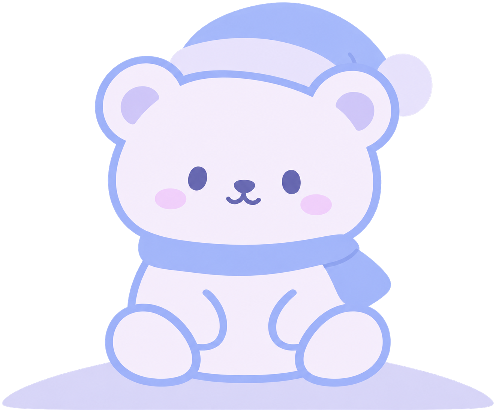

<!DOCTYPE html><html lang="en"><head><meta charset="utf-8"><title>Beary – wellness companion (prototype)</title>
<meta name="viewport" content="width=device-width, initial-scale=1, viewport-fit=cover">
<link href="https://fonts.googleapis.com/css2?family=Figtree:wght@400;500;700&display=swap" rel="stylesheet">
<style>
:root{--bg1:#0d0a2e;--bg2:#241a5c;--panel:#14102b;--pan2:#211c3d;--lav:#cfcbea;--peri:#a9b4e6;--tx:#f3f1ff;--mu:#aaa6c7;--bad:#e9a3a3;box-sizing:border-box;padding-top:env(safe-area-inset-top,0px);padding-bottom:env(safe-area-inset-bottom,0px)}
html{scroll-padding-top:env(safe-area-inset-top,0px)}
*{box-sizing:border-box}html,body{height:100%;margin:0}
body{background:#07051c;color:var(--tx);font:16px/1.45 Figtree,system-ui,sans-serif}
#app{max-width:430px;height:100%;margin:0 auto;position:relative;display:flex;flex-direction:column;background:linear-gradient(180deg,var(--bg1),var(--bg2) 80%);overflow:hidden}
main{flex:1;overflow-y:auto;padding:18px 18px 24px}
h1{font-size:22px;margin:4px 0 12px;line-height:1.25}h2{font-size:17px;margin:20px 0 8px}p{margin:6px 0}
.mu{color:var(--mu);font-size:14px}
button,input,select,textarea{font:inherit;color:inherit}
button{cursor:pointer;border:0}
:focus-visible{outline:3px solid var(--peri);outline-offset:2px}
.pill{background:var(--pan2);border-radius:999px;padding:11px 18px;min-height:44px;color:var(--tx)}
.pill.on{background:var(--lav);color:#17123a;font-weight:700}
.btn{background:var(--lav);color:#17123a;font-weight:700;border-radius:999px;padding:14px 22px;width:100%;min-height:48px}
.btn.ghost{background:var(--pan2);color:var(--tx);font-weight:500}
.btn.sm{width:auto;padding:10px 18px;min-height:44px}
.row{display:flex;gap:8px;flex-wrap:wrap}.between{display:flex;justify-content:space-between;align-items:center;gap:8px}
.card{background:var(--panel);border-radius:22px;padding:16px;margin:10px 0}
.card.tap{width:100%;text-align:left;display:block}
input,select,textarea{background:var(--pan2);border:1px solid #3a3466;border-radius:16px;padding:12px 14px;width:100%}
textarea{min-height:120px;resize:vertical}
label{display:block;margin:12px 0 6px;color:var(--mu);font-size:14px}
nav{display:flex;background:#0b0824;padding:6px 6px calc(6px + env(safe-area-inset-bottom,0px))}
nav button{flex:1;background:none;color:var(--mu);padding:8px 2px;min-height:52px;border-radius:16px;font-size:12px;display:flex;flex-direction:column;align-items:center;gap:3px}
nav button.on{color:var(--tx);background:var(--pan2)}
nav svg{width:22px;height:22px;fill:none;stroke:currentColor;stroke-width:1.8;stroke-linecap:round;stroke-linejoin:round}
.top{display:flex;align-items:center;gap:10px;margin-bottom:8px}
.back{background:var(--pan2);border-radius:50%;width:44px;height:44px;font-size:20px}
.home{flex:1;display:flex;flex-direction:column;position:relative;padding:18px 18px 0;overflow:hidden}
.ground{position:relative;z-index:1;flex:none;margin:0 -14%;padding:46px calc(14% + 18px) 0;background:#d7d5f7;border-radius:50% 50% 0 0/64px 64px 0 0}
.stage{flex:1;min-height:0;display:flex;flex-direction:column;align-items:center;justify-content:flex-end;position:relative;z-index:2;margin-bottom:-34px;padding-top:12px}
.stage img{display:block;width:100%;max-width:285px;height:auto;min-height:0;max-height:100%;object-fit:contain}
.bubble{background:var(--pan2);padding:10px 16px;border-radius:18px;margin-bottom:10px;max-width:260px;text-align:center;font-size:15px}
.dock{position:relative;padding:0 0 18px}
.say{background:rgba(23,18,58,.55);border-radius:999px;display:flex;align-items:center;padding:6px 6px 6px 20px;width:100%;color:#fff;text-align:left;min-height:56px;justify-content:space-between}
.say b{width:44px;height:44px;border-radius:50%;background:var(--lav);color:#17123a;display:grid;place-items:center;font-size:26px}
.quick{display:flex;gap:8px;margin:0 0 10px}.quick button{flex:1;background:rgba(20,16,43,.8);border-radius:18px;padding:10px 6px;font-size:13px;min-height:48px}
.msgs{display:flex;flex-direction:column;gap:10px;padding-bottom:8px}
.m{max-width:82%;padding:11px 15px;border-radius:18px;background:var(--panel);white-space:pre-wrap;overflow-wrap:anywhere;word-break:break-word;min-width:0}
.m.u{align-self:flex-end;background:var(--pan2)}.m small{display:block;color:var(--mu);font-size:11px;margin-top:4px}
.crisis{border:2px solid var(--bad);background:#2a1630;border-radius:18px;padding:14px;max-width:92%}
.dots span{display:inline-block;width:7px;height:7px;margin-right:4px;border-radius:50%;background:var(--mu);animation:b 1.2s infinite}
.dots span:nth-child(2){animation-delay:.2s}.dots span:nth-child(3){animation-delay:.4s}
@keyframes b{50%{opacity:.25}}
.compose{display:flex;gap:8px;padding:10px 14px;background:#0b0824}.compose input{border-radius:999px}
.send{width:48px;height:48px;border-radius:50%;background:var(--lav);color:#17123a;font-size:20px;flex:none}
.modal{position:absolute;inset:0;background:rgba(5,3,20,.7);display:flex;align-items:flex-end;z-index:9}
.sheet{background:var(--panel);width:100%;border-radius:26px 26px 0 0;padding:20px 18px calc(20px + env(safe-area-inset-bottom,0px));max-height:90%;overflow-y:auto}
.toast{position:absolute;left:50%;bottom:90px;transform:translateX(-50%);background:var(--lav);color:#17123a;padding:10px 18px;border-radius:999px;z-index:20;font-weight:700;white-space:nowrap}
.cgw{position:relative;margin:34px 24px 30px 24px}.cg{position:relative;aspect-ratio:1/1;border-radius:20px;overflow:hidden;touch-action:none;cursor:crosshair;border:1px solid #3a3470;outline-offset:3px}.cg .q{position:absolute;width:50%;height:50%}.cg .ax1{position:absolute;left:50%;top:0;bottom:0;width:1px;background:#ffffff40}.cg .ax2{position:absolute;top:50%;left:0;right:0;height:1px;background:#ffffff40}.cg .wl{position:absolute;transform:translate(-50%,-50%);font-size:12px;color:#ffffffb0;pointer-events:none;white-space:nowrap}.cg .dot{position:absolute;width:30px;height:30px;margin:-15px 0 0 -15px;border-radius:50%;background:#fff;border:4px solid #7a6fe0;box-shadow:0 2px 10px #0008;pointer-events:none;display:none}.cga{position:absolute;font-size:12px;color:#aaa6c7;white-space:nowrap}.cgr{margin:10px 0 0;min-height:44px}.mood{display:flex;gap:6px}.mood button{flex:1;border-radius:18px;padding:12px 2px;min-height:48px;color:#17123a;font-weight:700;font-size:14px;opacity:.55}.mood button.on{opacity:1;outline:3px solid #fff}
.tag{display:inline-block;background:var(--pan2);border-radius:999px;padding:3px 10px;font-size:12px;color:var(--mu)}
.scroll{overflow-x:auto}.chk{display:flex;gap:10px;align-items:flex-start;padding:8px 0;min-height:44px}.chk input{width:22px;height:22px;margin-top:2px;flex:none}

.pv{display:block;width:100%;text-align:left;background:rgba(20,16,43,.78);border-radius:18px;padding:10px 14px;margin-bottom:12px;font-size:14px;min-height:44px}
.talk{background:#17123a;color:#fff;border-radius:999px;min-height:54px;width:100%;font-weight:700;margin-bottom:12px}
.miss{border:1px dashed #4a4580;background:none;color:var(--mu)}
.toast{white-space:normal;max-width:90%;text-align:center}
.card textarea{min-height:0}

.tile{width:50px;flex:none;background:var(--pan2);border-radius:16px;text-align:center;padding:6px 0;line-height:1.1}.tile small{display:block;font-size:12px;color:var(--peri)}.tile b{font-size:21px}
.strip{display:flex;gap:8px;overflow-x:auto;padding:4px 2px 10px;scroll-snap-type:x proximity;scrollbar-width:none}
.dchip{flex:none;width:54px;min-height:68px;border-radius:18px;background:var(--pan2);padding:8px 0 4px;text-align:center;scroll-snap-align:center}.dchip small{display:block;font-size:11px;color:var(--mu)}.dchip b{font-size:19px}.dchip i{display:block;width:5px;height:5px;border-radius:50%;margin:3px auto 0;background:var(--peri)}
.dchip.on{background:var(--lav);color:#17123a}.dchip.on small{color:#3b3566}.dchip.on i{background:#17123a}
.tps{display:flex;align-items:center;gap:8px}.tps select{width:auto;flex:1;border-radius:999px;text-align:center;text-align-last:center;min-height:50px;font-size:19px;font-weight:700}
.tl{display:flex;gap:12px;align-items:center;padding:9px 0;border-bottom:1px solid #2c2650}.tl:last-child{border:0}.tm{width:74px;flex:none;color:var(--peri);font-weight:700;font-size:14px}.tl>span:nth-child(2){flex:1}
@media (prefers-reduced-motion:reduce){*{animation:none!important;transition:none!important}}

/* Chat screen: accessible circular controls and slide-out conversation history. */
.chat-header{display:flex;align-items:center;gap:12px;padding:14px 18px 6px;flex:none}
.chat-header h1{flex:1;margin:0;font-size:22px}
.chat-icon{width:44px;height:44px;border-radius:50%;background:var(--pan2);color:var(--tx);display:grid;place-items:center;flex:none}
.chat-icon svg{width:23px;height:23px;fill:none;stroke:currentColor;stroke-width:2;stroke-linecap:round}
.chat-help-icon{font-size:23px;font-weight:700;border:1px solid #514879}
.chat-help-icon:focus-visible,.chat-icon:focus-visible{outline:3px solid var(--peri)}
.chat-overlay{position:absolute;inset:0;background:rgba(5,3,20,.68);z-index:12}
.chat-drawer{position:absolute;left:0;top:0;bottom:0;width:58%;min-width:215px;max-width:285px;z-index:13;background:#171230;display:flex;flex-direction:column;padding:20px 12px calc(18px + env(safe-area-inset-bottom,0px));box-shadow:12px 0 35px rgba(0,0,0,.25)}
.drawer-heading{display:flex;align-items:center;justify-content:space-between;gap:6px;padding:0 3px 10px}
.drawer-heading h2{margin:0;font-size:19px}
.drawer-close{border-radius:50%;background:var(--pan2);width:36px;height:36px;font-size:23px;flex:none}
.drawer-new{border:1px solid #484167;border-radius:16px;background:var(--pan2);padding:12px 10px;text-align:left;width:100%;margin:8px 0 12px;min-height:44px;font-weight:700}
.drawer-history{flex:1;overflow-y:auto;min-height:0}
.drawer-history button{display:block;width:100%;text-align:left;border-radius:13px;background:transparent;color:var(--tx);padding:12px 10px;margin:2px 0;min-height:52px;overflow-wrap:anywhere}
.drawer-history button.active{background:#393154}
.drawer-history small{display:block;font-size:11px;color:var(--mu);margin-top:3px}
.chat-info-sheet h3{font-size:15px;margin:18px 0 7px;color:var(--peri)}
.chat-info-sheet p{font-size:14px;line-height:1.5}
.chat-info-sheet ul{margin:8px 0;padding-left:20px;font-size:14px;line-height:1.55}
.chat-info-sheet li{margin:6px 0}
.chat-info-sheet a{color:#cfd9ff;text-decoration:underline;text-underline-offset:3px}
.chat-info-sheet .info-warning{border:1px solid #59517d;background:#211c3d;border-radius:16px;padding:12px;margin:12px 0}
.chat-info-sheet .help-entry{border-bottom:1px solid #363050;padding:10px 0}
.chat-info-sheet .help-entry:last-child{border:0}
.chat-info-sheet .help-entry b{display:block;font-size:14px}
.chat-info-sheet .help-entry p{margin:3px 0}
.tour-block{position:absolute;inset:0;z-index:40}
.tour-dim{position:absolute;inset:0;background:rgba(5,3,20,.62);z-index:40;pointer-events:none}
.tour-ring{position:absolute;z-index:40;border-radius:20px;pointer-events:none;box-shadow:0 0 0 9999px rgba(5,3,20,.62),0 0 0 3px var(--lav)}
.tour-card{position:absolute;left:12px;right:12px;z-index:41;background:var(--panel);border:1px solid #4a4580;border-radius:22px;padding:16px;box-shadow:0 12px 40px rgba(0,0,0,.5)}
.tour-card h2{font-size:18px}
.guide{display:flex;gap:12px;align-items:flex-start;margin:0 0 14px}
.gface{flex:none;width:48px;height:48px;border-radius:50%;background:#d7d5f7;overflow:hidden;position:relative}
.gface img{position:absolute;display:block;width:120%;max-width:none;left:-10%;top:9%}
.gsay{background:var(--pan2);border-radius:6px 18px 18px 18px;padding:10px 14px;font-size:14.5px;line-height:1.45;min-width:0}
.gsay b{display:block;font-size:12px;color:var(--peri);margin-bottom:2px;letter-spacing:.03em}
.note{background:var(--panel);border-radius:22px;padding:18px 16px 8px}
.note h2.nt{margin:0 0 10px;font-size:19px;line-height:1.25}
.facts{margin:0 0 6px;display:grid;gap:6px}
.facts div{display:grid;grid-template-columns:78px 1fr;gap:8px;font-size:13.5px}
.facts dt{color:var(--mu)}.facts dd{margin:0;min-width:0;overflow-wrap:anywhere}
.sec{padding:16px 0 12px;border-top:1px solid #2c2650}
.sec h3{margin:0;font-size:16.5px}
.sec .desc{margin:3px 0 8px;color:var(--mu);font-size:13.5px;line-height:1.4}
.bl{list-style:none;margin:0;padding:0}
.bl li{position:relative;padding:6px 40px 6px 24px;line-height:1.45}
.bl li::before{content:"";position:absolute;left:4px;top:1.05em;width:8px;height:8px;border-radius:50%;background:var(--peri)}
.bl li.empty{color:var(--mu);font-size:14px}.bl li.empty::before{background:none;border:1.5px solid #5a54a0;width:6px;height:6px}
.bl .t{display:block;border-radius:8px;outline:none;padding:0;margin:0;overflow-wrap:anywhere}
.bl .t:focus{background:var(--pan2);box-shadow:0 0 0 2px #514879}
.bl .mt{display:block;color:var(--mu);font-size:12.5px;margin:1px 0 0}
.bl .x{position:absolute;right:0;top:1px;width:40px;height:40px;border-radius:50%;background:none;color:var(--mu);font-size:20px}
.addpt{background:none;color:var(--peri);font-weight:700;font-size:14px;min-height:44px;padding:4px 0 4px 24px;text-align:left}
.fine{font-size:12.5px;margin:12px 2px}
.actions{display:grid;gap:10px;margin:8px 0 6px}
.chips{display:flex;flex-wrap:wrap;gap:8px;justify-content:center}

/* Daily check-in tab and simple Home */
.ck3{display:flex;align-items:center;gap:4px;margin:2px -6px 0}
.ckar{flex:none;width:36px;height:56px;background:none;color:var(--lav);font-size:28px;border-radius:16px;line-height:1}.ckar:disabled{opacity:.3}
.ckdays{flex:1;display:flex;gap:8px}
.ckd{flex:1;min-width:0;min-height:104px;border-radius:20px;background:var(--panel);border:2px solid #2c2650;color:var(--tx);display:flex;flex-direction:column;align-items:center;gap:2px;padding:10px 4px 8px}
.ckd small{font-size:12px;opacity:.85}.ckd b{font-size:24px;line-height:1.1}
.ckd.on{background:var(--lav);border-color:var(--lav);color:#17123a}
.ckd .dots{display:flex;gap:4px;height:12px;align-items:center}.ckd .dots i{display:block;border-radius:50%;box-shadow:0 0 0 1.5px var(--panel)}.ckd.on .dots i{box-shadow:0 0 0 1.5px var(--lav)}
.ckd em{font-style:normal;font-size:11px;font-weight:700;padding:1px 8px;border-radius:999px;min-height:16px;background:var(--peri);color:#17123a}.ckd em.no,.ckd.on em.no{background:none;color:transparent}.ckd.on em{background:#17123a;color:var(--lav)}
.subbar{position:sticky;bottom:-24px;margin:14px -18px -24px;padding:12px 18px 14px;background:rgba(14,10,40,.86);backdrop-filter:blur(8px);border-top:1px solid #2c2650;z-index:5}.subbar .btn{margin:0;width:100%}#app:has(.subbar) .toast{bottom:150px}.sumb{display:block;width:100%;text-align:left;color:inherit;font:inherit;border:1px solid #3a3470;cursor:pointer;margin-top:12px}.sumrow{display:flex;justify-content:space-between;gap:12px;padding:8px 0;border-top:1px solid #2c2650;font-size:15px}.sumrow:first-of-type{margin-top:10px}.acc{background:var(--panel);border-radius:22px;margin:10px 0;overflow:hidden}
.acch{width:100%;display:flex;align-items:center;gap:12px;padding:12px 16px;min-height:64px;background:none;color:var(--tx);text-align:left}
.acch>span:first-child{flex:1}.acch b{display:block;font-size:17px}.acch .mu{display:block}
.acch svg{flex:none;width:22px;height:22px;fill:none;stroke:var(--lav);stroke-width:2.2;stroke-linecap:round;stroke-linejoin:round;transition:transform .15s}.acch svg.up{transform:rotate(180deg)}
.accb{padding:0 16px 16px}
.mb{display:inline-block;width:6px;height:14px;border-radius:3px;margin-left:3px;background:#3a3466}
.edot{flex:none;width:12px;height:12px;border-radius:50%}
.rng{display:block;width:100%;height:12px;margin:14px 0;border-radius:999px;-webkit-appearance:none;appearance:none;outline:none;cursor:grab;border:0;padding:0}
.rng::-webkit-slider-thumb{-webkit-appearance:none;appearance:none;width:34px;height:34px;border-radius:50%;background:#fff;border:3px solid #17123a;box-shadow:0 0 0 2px var(--lav);cursor:grab}
.rng::-moz-range-thumb{width:28px;height:28px;border-radius:50%;background:#fff;border:3px solid #17123a;box-shadow:0 0 0 2px var(--lav);cursor:grab}
.rng:focus-visible{outline:3px solid var(--peri);outline-offset:8px}
.dose{display:flex;align-items:center;gap:14px;padding:8px 0;border-top:1px solid #2c2650}.dose>b{flex:1;font-size:17px}
.c44{flex:none;width:44px;height:44px;border-radius:50%;display:grid;place-items:center;padding:0;border:2px solid #3a3466;background:var(--pan2);color:#17123a}.c44.on{background:var(--lav);border-color:var(--lav)}
.c44 svg{width:22px;height:22px;fill:none;stroke:currentColor;stroke-width:3;stroke-linecap:round;stroke-linejoin:round}
.xs{background:none;color:var(--mu);width:40px;height:40px;border-radius:50%;font-size:20px;flex:none}
.dashb{border:2px dashed #3a3466;background:none;color:var(--lav);font-weight:700;border-radius:999px;min-height:44px;padding:8px 18px}
.hm .hero{display:flex;align-items:center;gap:6px;background:linear-gradient(135deg,#2a2166,#17123a);border-radius:26px;padding:18px 8px 18px 18px;margin:12px 0 14px;overflow:hidden}
.hm .hero h2{margin:0 0 6px;font-size:21px;line-height:1.2}
.hm .hero .bubble{background:none;text-align:left;padding:0;max-width:none;margin:0 0 12px;font-size:14px;color:var(--lav)}
.hm .hero img{flex:none;display:block;width:128px;height:auto}
.wk{display:flex;gap:2px}
.wd{flex:1;min-width:0;min-height:76px;padding:8px 0;border-radius:16px;background:none;border:2px solid transparent;color:var(--tx);display:flex;flex-direction:column;align-items:center;gap:4px}
.wd small{font-size:12px;color:var(--mu)}.wd b{font-size:15px}.wd i{display:block;border-radius:50%}.wd i.em{width:14px;height:14px;border:2px dashed #3a3466}
.wd.on{background:var(--pan2);border-color:var(--lav)}
.say.dk{background:var(--pan2)}
.rl a{color:#cfd9ff;text-decoration:underline;text-underline-offset:3px;font-weight:700}.rl li{margin:0 0 12px}.rl ul{list-style:none;margin:0;padding:0}.rl .mu{display:block}
.mini{display:flex;gap:6px;align-items:flex-end;height:68px;margin:10px 0 2px}.mini div{flex:1;text-align:center;font-size:11px;color:var(--mu)}.mini i{display:block;border-radius:6px;margin:0 auto 4px;width:70%}
.sw{display:inline-block;width:10px;height:10px;border-radius:50%;margin-right:6px;vertical-align:baseline}
[hidden]{display:none!important}
</style></head><body><div id="app"></div>
<script>
// ===== Data layer (prototype only: localStorage. Replace with a secure backend; not production health-data storage) =====
// Two test links share this file: ?mode=fresh (first-time user, starts with onboarding) and ?mode=alex (prefilled version).
const MODE=(()=>{try{return ['alex','prefilled'].includes(new URLSearchParams(location.search).get('mode'))?'alex':'fresh'}catch(e){return'fresh'}})();
const KEY='beary-'+MODE+'-v1',$=s=>document.querySelector(s);
const iso=d=>d.toISOString().slice(0,10),ago=n=>{const d=new Date();d.setDate(d.getDate()-n);return d};
const MOODS=[['good','Good','#9fcf9f'],['okay','Okay','#b6a5cf'],['low','Low','#9fb4d3'],['irr','Irritable','#d3a0a0']];
const MN=Object.fromEntries(MOODS.map(m=>[m[0],m[1]]));
function seed(){const checks={},sleep={};
 // 14 days, oldest first. Each day: entries [time, mood, energy, note], meds, sleep hours. Fictional person, not real data.
 const D=[
 [[['09:00','okay','steady','Slept okay. Class went fine.']],'taken',7.5],
 [[['21:30','low','low','Tired after work. Kept thinking about the exam.']],'taken',6],
 [[['10:00','okay','steady',''],['18:30','good','high','Went for a walk with a friend and felt lighter.']],'taken',7],
 [[['08:30','low','low','Barely slept, woke up twice.'],['20:00','okay','steady','']],'taken',5],
 [[['15:00','irr','high','Snapped at my roommate over nothing. Is this stress or my mood?'],['22:00','low','low','Felt bad about it later.']],'skipped',5.5],
 [[['11:00','okay','steady','']],'taken',7],
 [[['12:00','okay','steady','']],'taken',7],
 [[['09:00','low','low','Overwhelmed with school and work.']],'taken',6],
 [[['13:00','good','steady','Good day. Got things done.']],'',7.5],
 [[['09:30','okay','steady','']],'taken',7],
 [[['08:00','low','low','Did not sleep much again. Should I mention this to Dr. Rivera?']],'skipped',5],
 [[['16:00','irr','steady','Busy day, felt on edge.'],['21:00','okay','steady','']],'taken',6],
 [[['12:00','okay','steady','']],'taken',7],
 [[],'',0]];
 D.forEach((x,i)=>{const d=iso(ago(13-i));checks[d]={entries:x[0].map(e=>({t:e[0],mood:e[1],energy:e[2]||undefined,note:e[3],sample:1})),meds:x[1]||undefined,msample:x[1]?1:undefined};if(!x[1])delete checks[d].msample;if(!x[0].length&&!x[1])delete checks[d];if(x[2])sleep[d]={h:x[2],q:'ok',sample:1}});
 const X={2:{ex:[{kind:'walk',min:30}],food:['breakfast','lunch','dinner']},3:{food:['lunch','dinner']},4:{doses:[['08:00',1],['20:00',0]],food:['breakfast','snacks']},5:{ex:[{kind:'yoga',min:25}],food:['breakfast','lunch','dinner']},6:{ex:[{kind:'walk',min:20}],food:['breakfast','dinner']},7:{food:['lunch']},8:{doses:[['08:00',1],['20:00',1]],ex:[{kind:'gym',min:45}],food:['breakfast','lunch','dinner','snacks']},9:{ex:[{kind:'run',min:30}],food:['breakfast','lunch','dinner']},10:{doses:[['08:00',0],['20:00',1]],food:['dinner']},11:{food:['breakfast','lunch']},12:{ex:[{kind:'walk',min:25}],food:['breakfast','lunch','dinner']}};
 Object.keys(X).forEach(i=>{const d=iso(ago(13-i)),c=checks[d];if(!c)return;const x=X[i];if(x.doses){c.doses=x.doses.map(o=>({t:o[0],done:!!o[1],sample:1}));delete c.meds;delete c.msample}if(x.ex)c.ex=x.ex.map(o=>({...o,t:'17:00',sample:1}));if(x.food){c.food={};x.food.forEach(k=>c.food[k]={done:true,sample:1})}});
 {const d=iso(ago(9));if(checks[d])checks[d].entries.push({t:'19:00',mood:'good',energy:'vhigh',note:'Felt wired in the evening.',sample:1})}
 const B=(t)=>({r:'b',t,proto:1}),U=(t)=>({r:'u',t});
 return{view:'home',v2:1,ms:{},checks,sleep,cur:0,
 conv:[
 {id:3,sample:1,t:ago(2).toISOString(),title:'Questions for Dr. Rivera',msgs:[U('What should I ask my provider?'),B('For your next visit, you could write down: What changes should I describe? Which mood, sleep, or energy patterns should I track? What questions do I have about care options? You can edit these and bring them to your clinician.'),U('I have not been sleeping well. Should I bring that up?'),B('Thanks for telling me. A big change like that is worth sharing with your care team. I can help you put it into a summary for them.')]},
 {id:2,sample:1,t:ago(5).toISOString(),title:'Feeling overwhelmed',msgs:[U('I feel overwhelmed with school and work lately.'),B('That sounds like a lot to carry. What has felt heaviest this week?'),U('Deadlines, mostly. I get stressed and then my energy drops.')]},
 {id:1,sample:1,t:ago(9).toISOString(),title:'Stress or mood?',msgs:[U('Is it stress or is my mood changing? I can\'t tell them apart.'),B('That is a hard thing to sort out alone. I can\'t tell you which it is, but a clinician can look at it with you. Want to note it as a question for your appointment?')]}],
 appts:[{id:1,sample:1,who:'Dr. Rivera (sample)',kind:'Therapy session',date:iso(ago(-4)),time:'15:30'}],sums:[],preps:{}}}
const blank=()=>({view:'home',v2:1,ms:{},checks:{},sleep:{},cur:0,conv:[{id:Date.now(),t:new Date().toISOString(),title:'New conversation',msgs:[introMsg()]}],appts:[],sums:[],preps:{}});
// Test version: nothing is saved. Every page load starts from the beginning (overview or Alex intro). Old saved data is cleared.
try{localStorage.removeItem(KEY)}catch(e){}
let S=MODE=='alex'?seed():blank();Object.values(S.checks).forEach(c=>{if(!c.entries){c.entries=c.mood?[{t:'12:00',mood:c.mood,note:c.note||''}]:[];delete c.mood;delete c.note}});
if(!S.v2){const sd=seed();for(const d in sd.checks){const c=S.checks[d],e=c&&c.entries,x=sd.checks[d].entries[0];if(c&&e.length==1&&e[0].mood==x.mood&&e[0].t=='12:00'&&(e[0].note||'')==x.note){e[0].sample=1;c.msample=1}}
 for(const d in sd.sleep){const z=S.sleep[d];if(z&&z.h==sd.sleep[d].h&&z.q=='ok')z.sample=1}
 S.appts.forEach(a=>{if(a.id===1)a.sample=1});S.conv.forEach(c=>{if(c.id===1)c.sample=1});const m=S.ms={};const t=new Date().toISOString().slice(0,10);
 if(Object.values(S.checks).some(c=>c.entries.some(e=>!e.sample)))m.checkin=t;if(S.conv.some(c=>!c.sample&&c.msgs.some(x=>x.r=='u')))m.chat=t;if(Object.values(S.sleep).some(z=>!z.sample))m.sleep=t;
 if(S.sums.length)m.summary=t;if(S.appts.some(a=>!a.sample))m.appt=t;if(Object.keys(S.preps).length)m.prep=t;S.v2=1}
const save=()=>{};
let ui={stack:[],sum:{range:3,src:{chat:1,checks:1},ex:{}},draft:null,busy:false,err:null,modal:null,hist:false};
const closeHistory=()=>{ui.hist=false;render()};
const openChatInfo=()=>{ui.hist=false;ui.modal='chatInfo';render()};
document.addEventListener('keydown',e=>{if(e.key==='Escape'&&ui.hist){closeHistory()}else if(e.key==='Escape'&&ui.modal==='chatInfo'){ui.modal=null;render()}});

// ===== Voiceflow adapter boundary =====
// Presentation never calls Voiceflow directly. To connect: deploy a small server proxy that holds your Voiceflow API key
// and calls POST https://general-runtime.voiceflow.com/state/user/{userID}/interact with your versionID;
// then set VOICEFLOW.proxyUrl to that proxy. Never put the API key in this file.
const VOICEFLOW={proxyUrl:null};
const CRISIS=/(suicid|kill myself|end my life|want to die|hurt myself|self.?harm|not safe)/i;
const ChatService={async send(text,history){
 if(VOICEFLOW.proxyUrl){const r=await fetch(VOICEFLOW.proxyUrl,{method:'POST',headers:{'Content-Type':'application/json'},body:JSON.stringify({message:text,history})});if(!r.ok)throw new Error('Service error');return{text:(await r.json()).text}}
 await new Promise(r=>setTimeout(r,900));if(/\/fail/.test(text))throw new Error('Simulated failure');
 if(CRISIS.test(text))return{crisis:true};
 if(/\b(am i bipolar|do i have bipolar|diagnose me|is this mania|am i manic|is this depression)\b/i.test(text))return{text:'I can explain terms and help you prepare for an evaluation, but I cannot determine whether you have bipolar disorder or identify a mood episode. A licensed clinician can review your experience and history with you. Would you like to write down questions for an appointment?',proto:1};
 if(/\b(hypomania|hypomanic)\b/i.test(text))return{text:'Hypomania is a period of elevated or unusually irritable mood and increased energy or activity that is less severe than mania. It is a clinical term, not something Beary can identify in an individual. Read more: https://medlineplus.gov/bipolardisorder.html',proto:1};
 if(/\b(mania|manic)\b/i.test(text))return{text:'Mania is a clinical term for a period of unusually elevated or irritable mood and increased activity or energy. A healthcare professional evaluates symptoms and their context. More information: https://www.nimh.nih.gov/health/publications/bipolar-disorder',proto:1};
 if(/\b(bipolar|bipolar disorder)\b/i.test(text))return{text:'Bipolar disorder is a mental health condition involving changes in mood, energy, activity, and thinking, including manic or hypomanic and depressive episodes. These terms describe patterns assessed by clinicians. Learn more: https://www.nimh.nih.gov/health/publications/bipolar-disorder',proto:1};
 if(/support group|support organization|where can i find support|find help|resources/i.test(text))return{text:'The Depression and Bipolar Support Alliance (DBSA) offers peer-support resources: https://www.dbsalliance.org/ . For mental health treatment providers in the U.S., use the government directory at https://findtreatment.gov/ . For immediate U.S. crisis support, call or text 988.',proto:1};
 if(/questions.*(doctor|provider|appointment)|what should i ask|prep.*appointment|prepare.*visit/i.test(text))return{text:'For your next visit, you could write down: What changes should I describe? Which mood, sleep, or energy patterns should I track? What questions do I have about care options or medications? You can edit these questions and bring them to your clinician.',proto:1};
 if(/(medic|meds|dose|pill)/i.test(text))return{text:'I can\'t advise on starting, stopping or changing medication. Your prescriber is the right person for that. Want me to add it to your appointment questions?',proto:1};
 if(/(haven't slept|not sleeping|racing|can't stop)/i.test(text))return{text:'Thanks for telling me. A big change like that is worth sharing with your care team soon. I can help you put it into a summary for them.',proto:1};
 const r=['Thank you for sharing that. What was that like for you?','I\'m listening. Is there anything about your sleep or energy you\'d want to remember for later?','That makes sense to put into words. Would you like to note it as a question for your next appointment?'];
 return{text:r[history.length%r.length],proto:1}}};

// ===== Journey, sample-data and summary helpers =====
const EN={drained:'Drained',low:'Low',steady:'Steady',high:'High',vhigh:'Very high',other:'Other'};
const WORDS={good:['Content','Good','Happy','Great','Unstoppable'],okay:['Flat','Meh','Okay','Settled','Steady'],low:['Slightly down','Down','Low','Very low','Heavy'],irr:['Edgy','Annoyed','Irritable','Angry','Very angry']};
const wordOf=(m,l,w)=>m=='other'?(w||'Other'):WORDS[m][(l||3)-1];
const moodOf=id=>MOODS.find(m=>m[0]==id)||['other','Other','#cfcbea'];
const ewd=e=>e.w||wordOf(e.mood,e.level,e.words);
const enLbl=e=>e.energy=='other'?(e.ew||'Other'):EN[e.energy];
const qLbl=z=>z.q=='other'?(z.qw||'other'):QN[z.q];
const dosesOf=c=>!c?[]:c.doses?c.doses:c.meds=='taken'?[{t:'08:00',done:true}]:c.meds=='skipped'?[{t:'08:00',done:false}]:[];
const EXK={walk:'Walk',run:'Run',gym:'Gym',yoga:'Yoga',sport:'Sport',other:'Other'};
const FD=[['breakfast','Breakfast'],['lunch','Lunch'],['dinner','Dinner'],['snacks','Snacks']];
const foodOf=c=>c&&c.food?c.food:{};const foodN=c=>FD.filter(f=>{const x=foodOf(c)[f[0]]||{};return x.done||x.note}).length;
const exLbl=o=>o.kind=='other'&&o.name?o.name:EXK[o.kind];
const exOf=c=>c&&c.ex?c.ex:[];const exMin=c=>exOf(c).reduce((a,o)=>a+o.min,0);
const medState=c=>{const x=dosesOf(c);return !x.length?'':x.every(o=>o.done)?'taken':x.some(o=>o.done)?'part':'skipped'};
const QN={rested:'restful',ok:'okay',poor:'poor',other:'other'};
const award=()=>{};
const sampleCount=()=>{let n=0;Object.values(S.checks).forEach(c=>{n+=c.entries.filter(e=>e.sample).length;if(c.msample)n++});n+=Object.values(S.sleep).filter(z=>z.sample).length+S.appts.filter(a=>a.sample).length+S.conv.filter(c=>c.sample).length;return n};
const hasSample=()=>sampleCount()>0;
function removeSample(){ask('Remove the sample entries? Anything you added yourself stays.','Remove sample data',doRemoveSample)}function doRemoveSample(){Object.keys(S.checks).forEach(d=>{const c=S.checks[d];c.entries=c.entries.filter(e=>!e.sample);if(c.msample){delete c.meds;delete c.msample}if(!c.entries.length&&c.meds===undefined&&!(c.doses&&c.doses.length)&&!exOf(c).length&&!c.mednote&&!foodN(c))delete S.checks[d]});
 Object.keys(S.sleep).forEach(d=>{if(S.sleep[d].sample)delete S.sleep[d]});S.appts=S.appts.filter(a=>!a.sample);S.conv=S.conv.filter(c=>!c.sample);if(!S.conv.length)S.conv=blank().conv;S.cur=0;save();render();toast('Sample data removed. Your own entries are untouched.')}
function reloadSample(){const sd=seed();for(const d in sd.checks){if(!S.checks[d])S.checks[d]=sd.checks[d];else if(!S.checks[d].entries.length){S.checks[d].entries=sd.checks[d].entries}}for(const d in sd.sleep)if(!S.sleep[d])S.sleep[d]=sd.sleep[d];
 if(!S.appts.some(a=>a.id===1))S.appts.push(sd.appts[0]);if(!S.conv.some(c=>c.id===1))S.conv.push(sd.conv[0]);save();render();toast('Sample data added to empty days only.')}
function eraseAll(){ask('Erase everything saved in this browser, including your entries and summaries? This can\'t be undone.','Erase everything',doEraseAll)}function doEraseAll(){try{localStorage.removeItem(KEY)}catch(e){}S=blank();ui.stack=[];ui.draft=null;ui.tour=null;ui.ptab=null;save();if(MODE=='fresh')tourGo(0);else render();toast('Everything erased')}
const TH=[['Sleep',/sleep|tired|rest|insomnia/i],['School & work',/school|work|class|job|deadline|exam/i],['Stress & overwhelm',/stress|overwhelm|anxious|pressure/i],['Energy & focus',/energy|motivat|focus|concentrat/i],['Mood changes',/mood|irritab|sad|low|angry|up and down/i],['Medication questions',/medic|meds|dose|pill/i],['People in my life',/friend|family|partner|roommate/i]];
const compose=d=>{ensureItems(d);return `${d.title}\n${d.range||''}\nBuilt from: ${d.src}\nDraft made by simple rules from my own entries, not by AI. Edited by me.\n\n`+d.sec.map(x=>x.h.toUpperCase()+'\n'+(x.items.filter(i=>i.t.trim()).map(i=>'• '+i.t.trim()+(i.m?'\n   '+i.m:'')).join('\n')||'• None'))
 .join('\n\n')};
function topicsFrom(m){if(!m.sec)return(m.qs||[]).map(t=>({t,s:'Question'}));ensureItems(m);const g=id=>((m.sec.find(y=>y.id==id)||{}).items||[]).map(i=>i.t.trim()).filter(Boolean);
 return[...g('themes').map(t=>({t:'Talk about: '+t,s:'Theme'})),...g('qs').map(t=>({t,s:'Question'}))]}
const tc=id=>{const p=S.preps[id],l=p?(p.topics||p.qs||[]):[],n=l.filter(t=>t.on).length;return n?` · ${n} topic${n==1?'':'s'}`:''};
function prepText(id){const a=S.appts.find(x=>x.id==id),p=S.preps[id],on=p.topics.filter(t=>t.on);return `Preparing for ${a.kind} with ${a.who}, ${fd(a.date)} ${ftm(a.time)}\n${p.sum!=null&&S.sums[p.sum]?'Based on: '+S.sums[p.sum].title+'\n':''}\nTopics I want to discuss:\n`+(on.length?on.map(t=>'- '+t.t).join('\n'):'- (none chosen yet)')}
function pickSum(id,i){const p=S.preps[id];p.sum=i;topicsFrom(S.sums[i]).forEach(t=>{if(!p.topics.some(x=>x.t==t.t))p.topics.push({...t,on:true})});award('prep');save();render()}
function togT(id,i,v){S.preps[id].topics[i].on=v;if(v)award('prep');save();render()}
function addTopic(id){const v=$('#nt').value.trim();if(!v)return;S.preps[id].topics.push({t:v,on:true,s:'You'});award('prep');save();render()}
const rel=d=>{const t=today();return d==t?'Today':d==iso(ago(1))?'Yesterday':d==iso(ago(-1))?'Tomorrow':new Date(d+'T12:00').toLocaleDateString(undefined,{weekday:'short',month:'short',day:'numeric'})};
const tile=d=>{const x=new Date(d+'T12:00');return `<div class="tile"><small>${x.toLocaleDateString(undefined,{month:'short'})}</small><b>${x.getDate()}</b></div>`};
const hasRec=d=>{const c=S.checks[d];return !!((c&&(c.entries.length||dosesOf(c).length||exOf(c).length||c.mednote||foodN(c)))||S.sleep[d])};
function strip(sel,fn,fut){const L=fut?[...Array(21)].map((_,i)=>iso(ago(-i))):[...Array(30)].map((_,i)=>iso(ago(29-i)));
 return `<div class="strip" role="group" aria-label="Choose a date">${L.map(d=>{const x=new Date(d+'T12:00'),on=d==sel;return `<button class="dchip ${on?'on':''}" aria-pressed="${on}" aria-label="${rel(d)}" onclick="${fn}('${d}')"><small>${d==today()?'Today':x.toLocaleDateString(undefined,{weekday:'short'})}</small><b>${x.getDate()}</b><i${!fut&&hasRec(d)?'':' style="background:none"'}></i></button>`}).join('')}</div>`}
function tpick(k,val){const [H,M]=val.split(':').map(Number),h=H%12||12,ap=H<12?'AM':'PM',ms=[...Array(12)].map((_,i)=>i*5);if(!ms.includes(M)){ms.push(M);ms.sort((a,b)=>a-b)}
 const o=(a,sel,f)=>a.map(x=>`<option value="${x}" ${x==sel?'selected':''}>${f?f(x):x}</option>`).join('');
 return `<div class="row" style="margin-bottom:8px">${[['Now',nowT()],['Morning','09:00'],['Afternoon','14:00'],['Evening','19:00']].map(q=>`<button class="pill" style="min-height:40px;padding:8px 14px;${val==q[1]&&q[0]!='Now'?'background:var(--lav);color:#17123a;font-weight:700':''}" onclick="setTime('${k}','${q[1]}')">${q[0]}</button>`).join('')}</div>
 <div class="tps" role="group" aria-label="Time"><select id="tph" aria-label="Hour" onchange="tpSet('${k}')">${o([...Array(12)].map((_,i)=>i+1),h)}</select><b>:</b><select id="tpm" aria-label="Minute" onchange="tpSet('${k}')">${o(ms,M,x=>String(x).padStart(2,'0'))}</select><select id="tpa" aria-label="AM or PM" onchange="tpSet('${k}')">${o(['AM','PM'],ap)}</select></div>`}
const apSync=()=>{if(ui.ap){const w=$('#aw'),k=$('#ak');if(w)ui.ap.who=w.value;if(k)ui.ap.kind=k.value}};
function setTime(k,v){syncF();apSync();ui[k].time=v;render()}
function tpSet(k){const h=+$('#tph').value%12,m=+$('#tpm').value,pm=$('#tpa').value=='PM';setTime(k,String(h+(pm?12:0)).padStart(2,'0')+':'+String(m).padStart(2,'0'))}
const openSums=()=>go('sums');const pickDay=d=>{syncF();ui.d=d;ui.f=null;render()},pickSleepDay=d=>{ui.d=d;render()},pickApDay=d=>{apSync();ui.ap.date=d;render()},openDay=d=>{ui.d=d;ui.modal='day';render()};
function useSum(i){const up=S.appts.filter(a=>a.date>=today()).sort((a,b)=>(a.date+a.time).localeCompare(b.date+b.time))[0];if(!up){toast('Add a visit first');go('sums');return}ui.prep=up.id;const p=S.preps[up.id]||(S.preps[up.id]={sum:null,topics:[]});if(!p.topics)p.topics=[];pickSum(up.id,i);go('prep')}
function delSum(i){ask('Delete this saved summary? Preparation topics you already chose stay.','Delete summary',()=>doDelSum(i))}function doDelSum(i){S.sums.splice(i,1);Object.values(S.preps).forEach(p=>{if(p.sum===i)p.sum=null;else if(p.sum>i)p.sum--});save();render();toast('Summary deleted')}
// ===== Word export (doctor's-note style .docx, built in the page with a small zip writer) =====
const crcT=(()=>{const t=[];for(let n=0;n<256;n++){let c=n;for(let k=0;k<8;k++)c=c&1?0xEDB88320^(c>>>1):c>>>1;t[n]=c>>>0}return t})();
const crc32=b=>{let c=-1;for(let i=0;i<b.length;i++)c=crcT[(c^b[i])&255]^(c>>>8);return(c^-1)>>>0};
function zipStore(files,type){const enc=new TextEncoder(),parts=[],cd=[];let off=0;const u16=n=>[n&255,n>>8&255],u32=n=>[n&255,n>>8&255,n>>16&255,n>>>24&255];
 files.forEach(([name,text])=>{const nb=enc.encode(name),db=enc.encode(text),crc=crc32(db),lh=[...u32(0x04034b50),...u16(20),...u16(0x0800),...u16(0),...u16(0),...u16(0x21),...u32(crc),...u32(db.length),...u32(db.length),...u16(nb.length),...u16(0)];
  parts.push(new Uint8Array(lh),nb,db);cd.push([[...u32(0x02014b50),...u16(20),...u16(20),...u16(0x0800),...u16(0),...u16(0),...u16(0x21),...u32(crc),...u32(db.length),...u32(db.length),...u16(nb.length),...u16(0),...u16(0),...u16(0),...u16(0),...u32(0),...u32(off)],nb]);off+=lh.length+nb.length+db.length});
 let cl=0;cd.forEach(([h,nb])=>{parts.push(new Uint8Array(h),nb);cl+=h.length+nb.length});parts.push(new Uint8Array([...u32(0x06054b50),...u16(0),...u16(0),...u16(files.length),...u16(files.length),...u32(cl),...u32(off),...u16(0)]));
 return new Blob(parts,{type})}
const xe=t=>String(t).replace(/[&<>]/g,c=>({'&':'&amp;','<':'&lt;','>':'&gt;'}[c]));
function docParts(){const d=ensureItems(ui.draft),who=MODE=='alex'?'Prefilled version (fictional example)':(S.name||'Not given'),on=new Date().toLocaleDateString(undefined,{year:'numeric',month:'long',day:'numeric'});
 const R=(t,o={})=>`<w:r><w:rPr>${o.b?'<w:b/>':''}${o.i?'<w:i/>':''}${o.c?`<w:color w:val="${o.c}"/>`:''}<w:sz w:val="${o.z||22}"/></w:rPr><w:t xml:space="preserve">${xe(t)}</w:t></w:r>`;
 const P=(runs,o={})=>`<w:p><w:pPr><w:keepNext w:val="${o.kn?1:0}"/>${o.bd?'<w:pBdr><w:bottom w:val="single" w:sz="6" w:space="6" w:color="9AA6E8"/></w:pBdr>':''}<w:spacing w:before="${o.bf||0}" w:after="${o.af==null?80:o.af}"/>${o.l?`<w:ind w:left="${o.l}" w:hanging="${o.h||0}"/>`:''}</w:pPr>${runs}</w:p>`;
 let b=P(R('Patient summary for my care team',{b:1,z:40,c:'241A5C'}),{af:40})+P(R('Written by the patient from their own entries',{i:1,c:'6B6790',z:20}),{af:160,bd:1});
 [['Prepared by',who],['Date prepared',on],['Period covered',d.range||''],['Built from',d.src||'']].forEach(([k,v])=>b+=P(R(k+':  ',{b:1})+R(v),{af:40,l:1900,h:1900}));
 d.sec.forEach(x=>{const it=x.items.filter(i=>i.t.trim());b+=P(R(x.h,{b:1,z:26,c:'241A5C'}),{bf:260,af:20,kn:1})+P(R(x.desc||'',{i:1,c:'6B6790',z:19}),{af:80,kn:1});
  if(!it.length)b+=P(R('Nothing recorded.',{c:'6B6790'}),{l:360});
  it.forEach(i=>{b+=P(R('•\t')+R(i.t.trim())+(i.m?'<w:r><w:br/></w:r>'+R(i.m,{c:'6B6790',z:19}):''),{l:360,h:360,af:60})})});
 b+=P(R("This summary was compiled from the patient's own entries using simple rules. It is not a diagnosis, a clinical assessment, or medication advice. It was reviewed and edited by the patient.",{i:1,c:'6B6790',z:19}),{bf:320});
 const N='xmlns:w="http://schemas.openxmlformats.org/wordprocessingml/2006/main"';
 return[['[Content_Types].xml','<?xml version="1.0" encoding="UTF-8" standalone="yes"?><Types xmlns="http://schemas.openxmlformats.org/package/2006/content-types"><Default Extension="rels" ContentType="application/vnd.openxmlformats-package.relationships+xml"/><Default Extension="xml" ContentType="application/xml"/><Override PartName="/word/document.xml" ContentType="application/vnd.openxmlformats-officedocument.wordprocessingml.document.main+xml"/><Override PartName="/word/styles.xml" ContentType="application/vnd.openxmlformats-officedocument.wordprocessingml.styles+xml"/></Types>'],
 ['_rels/.rels','<?xml version="1.0" encoding="UTF-8" standalone="yes"?><Relationships xmlns="http://schemas.openxmlformats.org/package/2006/relationships"><Relationship Id="rId1" Type="http://schemas.openxmlformats.org/officeDocument/2006/relationships/officeDocument" Target="word/document.xml"/></Relationships>'],
 ['word/_rels/document.xml.rels','<?xml version="1.0" encoding="UTF-8" standalone="yes"?><Relationships xmlns="http://schemas.openxmlformats.org/package/2006/relationships"><Relationship Id="rId1" Type="http://schemas.openxmlformats.org/officeDocument/2006/relationships/styles" Target="styles.xml"/></Relationships>'],
 ['word/styles.xml',`<?xml version="1.0" encoding="UTF-8" standalone="yes"?><w:styles ${N}><w:docDefaults><w:rPrDefault><w:rPr><w:rFonts w:ascii="Calibri" w:hAnsi="Calibri" w:eastAsia="Calibri" w:cs="Calibri"/><w:sz w:val="22"/></w:rPr></w:rPrDefault></w:docDefaults></w:styles>`],
 ['word/document.xml',`<?xml version="1.0" encoding="UTF-8" standalone="yes"?><w:document ${N}><w:body>${b}<w:sectPr><w:pgSz w:w="12240" w:h="15840"/><w:pgMar w:top="1300" w:right="1300" w:bottom="1300" w:left="1300" w:header="720" w:footer="720" w:gutter="0"/></w:sectPr></w:body></w:document>`]]}
function htmlDoc(){const d=ensureItems(ui.draft),who=MODE=='alex'?'Prefilled version (fictional example)':(S.name||'Not given');
 return `<html xmlns:w="urn:schemas-microsoft-com:office:word"><head><meta charset="utf-8"><style>body{font-family:Calibri,Arial,sans-serif;font-size:11pt}h1{color:#241A5C;font-size:20pt}h2{color:#241A5C;font-size:13pt;margin-bottom:0}.d{color:#6B6790;font-style:italic;font-size:9.5pt;margin:0 0 4px}li{margin-bottom:3px}.m{color:#6B6790;font-size:9.5pt}</style></head><body><h1>Patient summary for my care team</h1><p><b>Prepared by:</b> ${xe(who)}<br><b>Period covered:</b> ${xe(d.range||'')}<br><b>Built from:</b> ${xe(d.src||'')}</p>`+d.sec.map(x=>`<h2>${xe(x.h)}</h2><p class="d">${xe(x.desc||'')}</p><ul>${x.items.filter(i=>i.t.trim()).map(i=>`<li>${xe(i.t.trim())}${i.m?`<br><span class="m">${xe(i.m)}</span>`:''}</li>`).join('')||'<li>Nothing recorded.</li>'}</ul>`).join('')+`<p class="d">This summary was compiled from the patient's own entries using simple rules. It is not a diagnosis, a clinical assessment, or medication advice. It was reviewed and edited by the patient.</p></body></html>`}
function saveFile(blob,name){const a=document.createElement('a');a.href=URL.createObjectURL(blob);a.download=name;document.body.append(a);a.click();setTimeout(()=>{URL.revokeObjectURL(a.href);a.remove()},1500)}
function exportDocx(){const d=ui.draft,base='Beary summary '+d.title.replace(/^Summary, /,'').replace(/[^\w ]+/g,'').trim();
 try{saveFile(zipStore(docParts(),'application/vnd.openxmlformats-officedocument.wordprocessingml.document'),base+'.docx');toast('Word document created. Check your downloads.')}
 catch(e){try{saveFile(new Blob([htmlDoc()],{type:'application/msword'}),base+'.doc');toast('Word document created. Check your downloads.')}catch(x){toast('Could not create the file. Use Copy text instead.')}}}
// ===== Helpers =====
const esc=s=>String(s).replace(/[&<>"]/g,c=>({'&':'&amp;','<':'&lt;','>':'&gt;','"':'&quot;'}[c]));
const fd=s=>new Date(s.length==10?s+'T12:00':s).toLocaleDateString(undefined,{month:'short',day:'numeric'});
const toast=m=>{const o=$('.toast');let x=m;if(o)o.remove();const t=document.createElement('div');t.className='toast';t.setAttribute('role','status');t.textContent=x;$('#app').append(t);setTimeout(()=>t.remove(),/submitted/i.test(m)?1000:1400)};
const ICON={checkin:'<rect x="5" y="4" width="14" height="17" rx="2"/><path d="M9 4V3h6v1M9 13l2.2 2.2L15.5 11"/>',summaries:'<path d="M7 4h8l4 4v12H7z"/><path d="M15 4v4h4M10 13h6M10 17h6"/>',home:'<path d="M4 11l8-7 8 7v8a1 1 0 01-1 1h-4v-6H9v6H5a1 1 0 01-1-1z"/>',chat:'<path d="M4 5h16v11H9l-5 4z"/>',pat:'<path d="M4 18l5-6 4 3 7-9"/>',care:'<path d="M12 20s-7-4.5-7-10a4 4 0 017-2.5A4 4 0 0119 10c0 5.500-7 10-7 10z"/>'};
function bear(w=140,eyes=1){return `<svg width="${w}" viewBox="0 0 160 150" role="img" aria-label="Beary the bear companion"><g stroke="#9aa8dd" stroke-width="6" stroke-linejoin="round"><circle cx="42" cy="50" r="13" fill="#f3e6f2"/><circle cx="118" cy="50" r="13" fill="#f3e6f2"/><rect x="40" y="90" width="80" height="50" rx="26" fill="#f3e6f2"/><circle cx="80" cy="68" r="44" fill="#f3e6f2"/><path d="M40 52a40 36 0 0180 0z" fill="#b9c0ec"/><circle cx="80" cy="12" r="12" fill="#e8dcef"/><path d="M42 100q38 12 76 0v14q-38 12-76 0z" fill="#a9b4e6"/></g><ellipse cx="62" cy="74" rx="4" ry="${eyes?4.500:1.500}" fill="#8f9ddd"/><ellipse cx="98" cy="74" rx="4" ry="${eyes?4.500:1.500}" fill="#8f9ddd"/><ellipse cx="80" cy="80" rx="6" ry="4" fill="#8f9ddd"/></svg>`}
const guide=t=>`<div class="guide"><span class="gface" aria-hidden="true"></span><div class="gsay"><b>Beary</b>${t}</div></div>`;
function introMsg(){return{r:'b',intro:1,proto:1,t:"Hi, I'm Beary. I'm here to listen and help you reflect. I can't diagnose or give medication advice, but I can share general information and help you get ready for a visit. What's on your mind today?"}}
function go(v,push=true){if(push&&S.view!==v)ui.stack.push(S.view);if(v!=='chat')ui.hist=false;S.view=v;save();render()}
function back(){S.view=ui.stack.pop()||'home';save();render()}
const bump=()=>{S.pts=(S.pts||0)+1};
const topbar=(t,r='')=>`<div class="top"><button class="back" onclick="back()" aria-label="Back">‹</button><h1 style="margin:0;flex:1">${t}</h1>${r}</div>`;
const today=()=>iso(new Date());const ftm=t=>new Date('2000-01-01T'+t).toLocaleTimeString([],{hour:'numeric',minute:'2-digit'});const nowT=()=>{const d=new Date();return String(d.getHours()).padStart(2,'0')+':'+String(d.getMinutes()).padStart(2,'0')};const syncF=()=>{const n=$('#fn'),t=$('#ft');if(ui.f&&n)ui.f.note=n.value;if(ui.f&&t)ui.f.time=t.value};

// ===== Views =====
const ENV={drained:1,low:2,steady:3,high:4,vhigh:5},MVV={good:3,okay:2,low:1,irr:0};
const DS=[['mood','Mood','#a9b4e6'],['energy','Energy','#f2b36b'],['sleep','Sleep','#8fd0c9'],['ex','Exercise','#9fcf9f'],['meds','Medication','#e6a0c4'],['food','Food','#d9d17a']];
const avg=a=>a.reduce((x,y)=>x+y,0)/a.length;
function dayVals(d){const c=S.checks[d]||{entries:[]},es=c.entries||[],z=S.sleep[d],dd=dosesOf(c),mo=es.filter(e=>MVV[e.mood]!=null),en=es.filter(e=>ENV[e.energy]!=null),xm=exMin(c),fn=foodN(c);
 return{mood:mo.length?{v:avg(mo.map(e=>MVV[e.mood]))/3,raw:mo.map(ewd).join(', ')}:null,
  energy:en.length?{v:(avg(en.map(e=>ENV[e.energy]))-1)/4,raw:en.map(enLbl).join(', ')}:null,
  sleep:z?{v:Math.min(1,z.h/12),raw:z.h+' h'}:null,
  ex:xm?{v:Math.min(1,xm/90),raw:xm+' min'}:null,
  meds:dd.length?{v:dd.filter(o=>o.done).length/dd.length,raw:dd.filter(o=>o.done).length+' of '+dd.length+' doses'}:null,
  food:fn?{v:fn/4,raw:fn+' of 4'}:null}}
function weekInsight(){const ds=[...Array(7)].map((_,i)=>iso(ago(6-i))),C=[],pl=(n,w)=>n+' '+w+(n==1?'':'s'),dl=a=>a.map(fd).join(', ');
 const sl=ds.filter(d=>S.sleep[d]),sh=sl.filter(d=>S.sleep[d].h<6);
 if(sl.length>=3&&sh.length>=2)C.push({sc:sh.length/7*1.2,t:'Sleep was under 6 hours on '+sh.length+' of the '+pl(sl.length,'night')+' recorded.',d:dl(sh),hl:sh,f:d=>S.sleep[d]?Math.min(1,S.sleep[d].h/12):null});
 {const d14=[...Array(14)].map((_,i)=>iso(ago(13-i))),lw=e=>e.mood=='low'||e.mood=='irr',has=d=>((S.checks[d]||{}).entries||[]).length>0,sd=d14.filter(d=>S.sleep[d]&&has(d)),sh2=sd.filter(d=>S.sleep[d].h<6),ot=sd.filter(d=>S.sleep[d].h>=6),bad=x=>x.filter(d=>S.checks[d].entries.some(lw));
  if(sh2.length>=2&&ot.length>=2&&bad(sh2).length>=2)C.push({sc:2,n:14,t:'On days after a night under 6 hours of sleep, you chose Low or Irritable on '+bad(sh2).length+' of '+sh2.length+' days. On other days with sleep recorded: '+bad(ot).length+' of '+ot.length+'.',d:dl(sh2),hl:bad(sh2),f:d=>S.sleep[d]?Math.min(1,S.sleep[d].h/12):null})}
 {const pts=[];ds.forEach(d=>((S.checks[d]||{}).entries||[]).forEach(e=>{const q=vaOf(e,d);if(q)pts.push({d,q:qOf(q.v,q.a)})}));if(pts.length>=4){const c={};pts.forEach(o=>c[o.q]=(c[o.q]||0)+1);const top=Object.keys(c).sort((x,y)=>c[y]-c[x])[0],sh=c[top]/pts.length;if(sh>=.5&&c[top]>=3){const hd=[...new Set(pts.filter(o=>o.q==top).map(o=>o.d))];C.push({sc:sh*(top=='hn'?1.5:top=='ln'?1.3:.8),t:c[top]+' of '+pts.length+' check-ins were placed in the '+qInfo(top)[1].toLowerCase()+' area of the grid.',d:dl(hd),hl:hd})}}}
 const hi=ds.filter(d=>((S.checks[d]||{}).entries||[]).some(e=>e.energy=='high'||e.energy=='vhigh')),vh=ds.filter(d=>((S.checks[d]||{}).entries||[]).some(e=>e.energy=='vhigh'));
 const ef=d=>{const v=dayVals(d).energy;return v?v.v:null};
 if(hi.length>=2)C.push({sc:hi.length/7*1.6+(vh.length?.15:0),t:'High or very high energy was recorded on '+hi.length+' of the last 7 days.',d:dl(hi),hl:hi,f:ef});
 else if(vh.length)C.push({sc:.6,t:'Very high energy was recorded on '+dl(vh)+'.',d:'',hl:vh,f:ef});
 MOODS.forEach(m=>{const dd=ds.filter(d=>((S.checks[d]||{}).entries||[]).some(e=>e.mood==m[0]));if(dd.length>=2)C.push({sc:dd.length/7*((m[0]=='low'||m[0]=='irr')?1.1:m[0]=='good'?.9:.5),t:'You chose '+m[1]+' on '+dd.length+' of the last 7 days.',d:dl(dd),hl:dd})});
 let dn=0,dt=0;const md=[];ds.forEach(d=>{const l=dosesOf(S.checks[d]);l.forEach(o=>{dt++;if(o.done)dn++});if(l.some(o=>!o.done))md.push(d)});if(dt>=3&&dn<dt)C.push({sc:(dt-dn)/dt,t:dn+' of '+dt+' logged doses were marked taken.',d:'',hl:md,f:d=>{const v=dayVals(d).meds;return v?v.v:null}});
 const ed=ds.filter(d=>exMin(S.checks[d])>0);if(ed.length>=2)C.push({sc:ed.length/7*.8,t:'Exercise was recorded on '+ed.length+' of the last 7 days, '+ed.reduce((a,d)=>a+exMin(S.checks[d]),0)+' minutes in total.',d:dl(ed),hl:ed,f:d=>{const v=dayVals(d).ex;return v?v.v:null}});
 if(C.length){C.sort((a,b)=>b.sc-a.sc);return C[0]}
 const ci=ds.filter(d=>((S.checks[d]||{}).entries||[]).length);
 return ci.length?{t:'You recorded check-ins on '+ci.length+' of the last 7 days.',d:dl(ci),hl:ci}:null}
function miniHTML(w){const N=w.n||7,ds=[...Array(N)].map((_,i)=>iso(ago(N-1-i)));
 return `<div class="mini" role="img" aria-label="${esc(w.t)}">${ds.map(d=>{const on=w.hl.includes(d),v=w.f?w.f(d):(on?1:0),h=v==null?4:Math.max(6,Math.round(v*46));return `<div><i style="height:${h}px;background:${on?'var(--lav)':'#3a3466'}"></i>${new Date(d+'T12:00').toLocaleDateString(undefined,{weekday:'narrow'})}</div>`}).join('')}</div>`}
const dashDef=()=>ui.dash||(ui.dash={on:{mood:1,energy:1,sleep:1},range:7,view:'lines'});
const dashTog=k=>{const d=dashDef();d.on[k]=!d.on[k];render()},dashRange=n=>{dashDef().range=n;render()},dashView=v=>{dashDef().view=v;render()};
function dashHTML(){const D=dashDef(),n=D.range,ds=[...Array(n)].map((_,i)=>iso(ago(n-1-i))),vals=ds.map(dayVals),sel=DS.filter(x=>D.on[x[0]]),W=340,H=150,px=8;
 const xl=i=>n==1?W/2:px+i*(W-2*px)/(n-1);const lab=[0,Math.floor((n-1)/2),n-1].filter((x,i,a)=>a.indexOf(x)==i).map(i=>`<text x="${xl(i)}" y="${H+4}" fill="#aaa6c7" font-size="10" text-anchor="${i==0?'start':i==n-1?'end':'middle'}">${fd(ds[i])}</text>`).join('');
 let chart='';
 if(!sel.length)chart='<p class="mu">Choose at least one item above.</p>';
 else if(D.view=='lines'){chart=`<svg viewBox="0 0 ${W} ${H+10}" width="100%" role="img" aria-label="Line graph of ${sel.map(x=>x[1]).join(', ')} over the last ${n} days">`+[0,.5,1].map(f=>`<line x1="${px}" x2="${W-px}" y1="${10+(1-f)*(H-30)}" y2="${10+(1-f)*(H-30)}" stroke="#2c2650"/>`).join('')+sel.map(x=>{let pth='',pen=false,dots='';vals.forEach((v,i)=>{const q=v[x[0]];if(!q){pen=false;return}const X=xl(i),Y=10+(1-q.v)*(H-30);pth+=(pen?'L':'M')+X.toFixed(1)+' '+Y.toFixed(1);pen=true;dots+=`<circle cx="${X.toFixed(1)}" cy="${Y.toFixed(1)}" r="3.5" fill="${x[2]}"><title>${fd(ds[i])}: ${esc(x[1])} ${esc(q.raw)}</title></circle>`});return `<path d="${pth}" fill="none" stroke="${x[2]}" stroke-width="2" stroke-linejoin="round"/>${dots}`}).join('')+lab+'</svg>'+`<div class="row" style="gap:12px;margin-top:6px">${sel.map(x=>`<span class="mu"><i class="sw" style="background:${x[2]}"></i>${x[1]}</span>`).join('')}</div>`}
 else{const lw=70,cw=(W-lw)/n,rh=26;chart=`<svg viewBox="0 0 ${W} ${sel.length*rh+16}" width="100%" role="img" aria-label="Heat map of ${sel.map(x=>x[1]).join(', ')} over the last ${n} days">`+sel.map((x,r)=>`<text x="0" y="${r*rh+17}" fill="#cfcbea" font-size="11">${x[1]}</text>`+vals.map((v,i)=>{const q=v[x[0]],X=lw+i*cw;return q?`<rect x="${(X+1).toFixed(1)}" y="${r*rh+3}" width="${(cw-2).toFixed(1)}" height="${rh-6}" rx="4" fill="${x[2]}" fill-opacity="${(.15+.85*q.v).toFixed(2)}"><title>${fd(ds[i])}: ${esc(x[1])} ${esc(q.raw)}</title></rect>`:`<rect x="${(X+1).toFixed(1)}" y="${r*rh+3}" width="${(cw-2).toFixed(1)}" height="${rh-6}" rx="4" fill="none" stroke="#4a4580" stroke-dasharray="2 3"><title>${fd(ds[i])}: nothing recorded</title></rect>`}).join('')).join('')+[0,Math.floor((n-1)/2),n-1].filter((x,i,a)=>a.indexOf(x)==i).map(i=>`<text x="${(lw+i*cw+cw/2).toFixed(1)}" y="${sel.length*rh+12}" fill="#aaa6c7" font-size="10" text-anchor="${i==0?'start':i==n-1?'end':'middle'}">${fd(ds[i])}</text>`).join('')+'</svg>'+'<p class="mu" style="margin:6px 0 0;font-size:13px">Darker = higher within that row\'s own range. Dashed = nothing recorded.</p>'}
 return `<h2>Build your own view</h2><div class="card"><p class="mu" style="margin:0 0 8px">Choose what to show together.</p><div class="row" role="group" aria-label="What to show">${DS.map(x=>`<button class="pill ${D.on[x[0]]?'on':''}" aria-pressed="${!!D.on[x[0]]}" onclick="dashTog('${x[0]}')"><i class="sw" style="background:${x[2]}"></i>${x[1]}</button>`).join('')}</div>
 <div class="row" style="margin:10px 0" role="group" aria-label="Time range">${[7,14,30].map(r=>`<button class="pill ${n==r?'on':''}" style="min-height:40px;padding:6px 14px" aria-pressed="${n==r}" onclick="dashRange(${r})">${r} days</button>`).join('')}<span style="flex:1"></span>${[['lines','Lines'],['heat','Heat map']].map(v=>`<button class="pill ${D.view==v[0]?'on':''}" style="min-height:40px;padding:6px 14px" aria-pressed="${D.view==v[0]}" onclick="dashView('${v[0]}')">${v[1]}</button>`).join('')}</div>
 ${chart}<p class="mu" style="margin:8px 0 0;font-size:13px">Each item is scaled from its lowest to its highest possible value so they fit in one graph. This shows what was recorded, not why.</p></div>`}

const CGQ=[['hn','High energy, negative','#f19a93'],['hp','High energy, positive','#f2c46b'],['ln','Low energy, negative','#8fb4f2'],['lp','Low energy, positive','#8fd0b0']];
const CGW=[['Energized',.3,.8],['Excited',.7,.72],['Happy',.78,.32],['Tense',-.3,.8],['Irritable',-.7,.68],['Anxious',-.82,.28],['Sad',-.78,-.3],['Low',-.55,-.65],['Drained',-.2,-.82],['Calm',.2,-.78],['Relaxed',.55,-.58],['Content',.78,-.26],['Okay',0,0]];
const qOf=(v,a)=>(a>=0?(v<0?'hn':'hp'):(v<0?'ln':'lp')),qInfo=id=>CGQ.find(x=>x[0]==id);
function cgNear(v,a){let b=CGW[12],d=9;CGW.forEach(w=>{const q=Math.hypot(w[1]-v,w[2]-a);if(q<d){d=q;b=w}});return b[0]}
function cgDesc(v,a){const e=a<-.2?'low energy':a>.2?'high energy':'middle energy',p=v<-.2?'negative':v>.2?'positive':'in the middle';return e+', '+p}
function cgSet(k,v,a){k.v=Math.max(-1,Math.min(1,v));k.a=Math.max(-1,Math.min(1,a));k.w=cgNear(k.v,k.a);k.mood=k.v>.35?'good':k.v>=-.15?'okay':(k.a>.15?'irr':'low');k.level=Math.max(1,Math.min(5,1+Math.round(Math.min(1,Math.hypot(k.v,k.a))*4)));k.energy=k.a<-.6?'drained':k.a<-.2?'low':k.a<.2?'steady':k.a<.6?'high':'vhigh'}
function vaOf(e,d){if(e.v!=null)return{v:e.v,a:e.a,w:e.w};if(e.mood=='other'&&!e.energy)return null;const L=e.level||3,h=((e.t||'')+(d||'')).split('').reduce((x,c)=>(x*31+c.charCodeAt(0))%97,7),j=(h%17-8)/100,j2=(h%13-6)/100;let v=e.mood=='good'?.15+.14*(L-1):e.mood=='okay'?.1*(L-3):e.mood=='other'?0:-(.15+.14*(L-1));const am={drained:-.85,low:-.5,steady:0,high:.5,vhigh:.85}[e.energy];let a=am!=null?am:(e.mood=='irr'?.5:e.mood=='good'?.2:e.mood=='low'?-.45:0);v=Math.max(-.95,Math.min(.95,v+j));a=Math.max(-.95,Math.min(.95,a+j2));return{v,a,w:cgNear(v,a)}}
function cgBtn(k){const ok=k.v!=null||(k.other&&(k.words||'').trim());const b=$('#cksv');if(b){b.style.opacity=ok?1:.45;if(ok)b.removeAttribute('aria-disabled');else b.setAttribute('aria-disabled','true')}}
function cgPaint(){const k=ckS(),d=$('#cgd'),r=$('#cgr');if(!d)return;if(k.v==null){d.style.display='none';if(r)r.innerHTML='Tap or drag on the grid to place how you feel.'}else{d.style.display='block';d.style.left=((k.v+1)/2*100)+'%';d.style.top=((1-k.a)/2*100)+'%';if(r)r.innerHTML='Closest word: <b style="font-size:20px">'+k.w+'</b><br><span class="mu">'+cgDesc(k.v,k.a)+'</span>'}cgBtn(k)}
function cgPt(ev){const r=ev.currentTarget.getBoundingClientRect();return[((ev.clientX-r.left)/r.width)*2-1,1-((ev.clientY-r.top)/r.height)*2]}
function cgDown(ev){ev.preventDefault();const k=ckS();ev.currentTarget.setPointerCapture(ev.pointerId);k.drag=1;const[v,a]=cgPt(ev);cgSet(k,v,a);cgPaint()}
function cgMove(ev){const k=ckS();if(!k.drag)return;const[v,a]=cgPt(ev);cgSet(k,v,a);cgPaint()}
function cgUp(){ckS().drag=0}
function cgKey(ev){const k=ckS(),m={ArrowLeft:[-.1,0],ArrowRight:[.1,0],ArrowUp:[0,.1],ArrowDown:[0,-.1]}[ev.key];if(!m)return;ev.preventDefault();cgSet(k,(k.v==null?0:k.v)+m[0],(k.a==null?0:k.a)+m[1]);cgPaint()}
const ckOther=()=>{const k=ckS();k.other=!k.other;render()};
function cgPicker(k){return `<div class="cgw"><div class="cga" style="left:50%;top:-20px;transform:translateX(-50%)">High energy</div><div class="cga" style="left:50%;bottom:-22px;transform:translateX(-50%)">Low energy</div><div class="cga" style="left:-24px;top:50%;transform:translateY(-50%) rotate(-90deg);transform-origin:center;width:0;display:flex;justify-content:center">More negative</div><div class="cga" style="right:-24px;top:50%;transform:translateY(-50%) rotate(90deg);width:0;display:flex;justify-content:center">More positive</div>
 <div id="cg" class="cg" tabindex="0" role="application" aria-label="Mood and energy grid. Use the arrow keys, or tap or drag, to place how you feel. Left to right goes from more negative to more positive. Bottom to top goes from low energy to high energy." onpointerdown="cgDown(event)" onpointermove="cgMove(event)" onpointerup="cgUp()" onpointercancel="cgUp()" onkeydown="cgKey(event)">
 <div class="q" style="left:0;top:0;background:${CGQ[0][2]}2e"></div><div class="q" style="left:50%;top:0;background:${CGQ[1][2]}2e"></div><div class="q" style="left:0;top:50%;background:${CGQ[2][2]}2e"></div><div class="q" style="left:50%;top:50%;background:${CGQ[3][2]}2e"></div><div class="ax1"></div><div class="ax2"></div>
 ${CGW.map(w=>`<span class="wl" style="left:${(w[1]+1)/2*100}%;top:${(1-w[2])/2*100}%">${w[0]}</span>`).join('')}<div id="cgd" class="dot" style="${k.v==null?'':`display:block;left:${(k.v+1)/2*100}%;top:${(1-k.a)/2*100}%`}"></div></div></div>
 <div id="cgr" class="cgr" aria-live="polite">${k.v==null?'Tap or drag on the grid to place how you feel.':`Closest word: <b style="font-size:20px">${k.w}</b><br><span class="mu">${cgDesc(k.v,k.a)}</span>`}</div>
 <div class="row" style="margin-top:10px"><button class="pill ${k.other?'on':''}" aria-pressed="${!!k.other}" onclick="ckOther()">Other</button></div>${k.other?`<label for="cko">Type your own word</label><input id="cko" maxlength="40" autocomplete="off" value="${esc(k.words)}" oninput="ckWords(this.value)">`:''}`}

const mapDef=()=>ui.map||(ui.map={range:14,view:'points'});
const mapRange=n=>{mapDef().range=n;render()},mapView=v=>{mapDef().view=v;render()};
function mapPts(n){const out=[];for(let i=n-1;i>=0;i--){const d=iso(ago(i));((S.checks[d]||{}).entries||[]).forEach(e=>{const q=vaOf(e,d);if(q)out.push({d,t:e.t,...q})})}return out}
function mapHTML(){const M=mapDef(),n=M.range,P=mapPts(n),Z=300,X=v=>(v+1)/2*Z,Y=a=>(1-a)/2*Z;
 const cnt={hn:0,hp:0,ln:0,lp:0};P.forEach(o=>cnt[qOf(o.v,o.a)]++);
 const tint=CGQ.map((x,i)=>`<rect x="${i%2?Z/2:0}" y="${i<2?0:Z/2}" width="${Z/2}" height="${Z/2}" fill="${x[2]}" fill-opacity=".16"/>`).join('')+`<line x1="${Z/2}" x2="${Z/2}" y1="0" y2="${Z}" stroke="#ffffff30"/><line y1="${Z/2}" y2="${Z/2}" x1="0" x2="${Z}" stroke="#ffffff30"/>`;
 let plot='';
 if(!P.length)plot='<p class="mu">No check-ins in this range yet.</p>';
 else if(M.view=='points'){const N=P.length;plot=`<svg viewBox="-34 -22 ${Z+68} ${Z+44}" width="100%" role="img" aria-label="Grid of mood and energy. ${N} check-ins in the last ${n} days. ${CGQ.map(x=>x[1]+': '+cnt[x[0]]).join('. ')}.">${tint}<g font-size="10" fill="#aaa6c7"><text x="${Z/2}" y="-8" text-anchor="middle">High energy</text><text x="${Z/2}" y="${Z+16}" text-anchor="middle">Low energy</text><text transform="translate(-12 ${Z/2}) rotate(-90)" text-anchor="middle">More negative</text><text transform="translate(${Z+22} ${Z/2}) rotate(90)" text-anchor="middle">More positive</text></g>`+P.map((o,i)=>{const last=i==N-1;return `<circle cx="${X(o.v).toFixed(1)}" cy="${Y(o.a).toFixed(1)}" r="${last?8:6}" fill="#c9c3f5" fill-opacity="${(.3+.7*(N<2?1:i/(N-1))).toFixed(2)}" stroke="${last?'#fff':'#1a1445'}" stroke-width="${last?2.5:1.5}"><title>${fd(o.d)}${o.t?' '+ftm(o.t):''}: ${esc(o.w||'')}</title></circle>`}).join('')+'</svg><p class="mu" style="margin:6px 0 0;font-size:13px">Each dot is one check-in. Brighter dots are more recent. The outlined dot is the latest.</p>'}
 else{const G=6,cells=Array.from({length:G*G},()=>0);P.forEach(o=>{const cx=Math.min(G-1,Math.floor((o.v+1)/2*G)),cy=Math.min(G-1,Math.floor((1-o.a)/2*G));cells[cy*G+cx]++});const mx=Math.max(...cells),cw=Z/G;plot=`<svg viewBox="-34 -22 ${Z+68} ${Z+44}" width="100%" role="img" aria-label="Heat map of mood and energy for the last ${n} days. ${CGQ.map(x=>x[1]+': '+cnt[x[0]]).join('. ')}.">`+cells.map((c,i)=>{const x=(i%G)*cw,y=Math.floor(i/G)*cw,o=c?.18+.82*c/mx:0;return `<rect x="${x+1}" y="${y+1}" width="${cw-2}" height="${cw-2}" rx="5" fill="${c?'#c9c3f5':'#ffffff'}" fill-opacity="${c?o.toFixed(2):.05}"><title>${c} check-in${c==1?'':'s'}</title></rect>${c?`<text x="${x+cw/2}" y="${y+cw/2+4}" text-anchor="middle" font-size="12" font-weight="700" fill="${o>.55?'#17123a':'#e8e4ff'}">${c}</text>`:''}`}).join('')+`<line x1="${Z/2}" x2="${Z/2}" y1="0" y2="${Z}" stroke="#ffffff40"/><line y1="${Z/2}" y2="${Z/2}" x1="0" x2="${Z}" stroke="#ffffff40"/><g font-size="10" fill="#aaa6c7"><text x="${Z/2}" y="-8" text-anchor="middle">High energy</text><text x="${Z/2}" y="${Z+16}" text-anchor="middle">Low energy</text><text transform="translate(-12 ${Z/2}) rotate(-90)" text-anchor="middle">More negative</text><text transform="translate(${Z+22} ${Z/2}) rotate(90)" text-anchor="middle">More positive</text></g></svg><p class="mu" style="margin:6px 0 0;font-size:13px">Brighter squares are where more check-ins fell. The number is the count.</p>`}
 const tot=P.length||1;
 const quad=`<div style="display:grid;grid-template-columns:1fr 1fr;gap:8px;margin-top:12px">${CGQ.map(x=>`<div style="background:${x[2]}26;border:1px solid ${x[2]}66;border-radius:12px;padding:8px 10px"><span class="mu" style="font-size:12px">${x[1]}</span><br><b style="font-size:20px">${cnt[x[0]]}</b> <span class="mu" style="font-size:12px">of ${P.length}</span></div>`).join('')}</div>`;
 const ds=[...Array(n)].map((_,i)=>iso(ago(n-1-i)));
 const strip=`<p class="mu" style="margin:14px 0 6px;font-size:13px">Day by day (average of that day's check-ins)</p><div style="display:flex;gap:${n>14?3:6}px;flex-wrap:nowrap" role="img" aria-label="Each day coloured by the area of the grid its check-ins fall in">${ds.map(d=>{const es=((S.checks[d]||{}).entries||[]).map(e=>vaOf(e,d)).filter(Boolean);if(!es.length)return `<div style="flex:1;text-align:center;font-size:10px;color:#8b87ad"><i style="display:block;height:${n>14?18:26}px;border-radius:8px;border:1px dashed #4a4480;margin-bottom:3px"></i>${new Date(d+'T12:00').toLocaleDateString(undefined,{weekday:'narrow'})}</div>`;const v=es.reduce((a,o)=>a+o.v,0)/es.length,a=es.reduce((x,o)=>x+o.a,0)/es.length,q=qInfo(qOf(v,a));return `<div style="flex:1;text-align:center;font-size:10px;color:#8b87ad"><i style="display:block;height:${n>14?18:26}px;border-radius:8px;background:${q[2]};opacity:.85;margin-bottom:3px"><title>${fd(d)}: ${q[1]}</title></i>${new Date(d+'T12:00').toLocaleDateString(undefined,{weekday:'narrow'})}</div>`}).join('')}</div>`;
 return `<div class="card" style="margin:14px 0"><div class="between" style="align-items:center"><b style="font-size:18px">Mood and energy map</b></div><div class="row" style="margin:10px 0" role="group" aria-label="Choose how many days">${[7,14,30].map(x=>`<button class="pill ${n==x?'on':''}" aria-pressed="${n==x}" onclick="mapRange(${x})">${x} days</button>`).join('')}<span style="width:8px"></span>${[['points','Dots'],['heat','Heat map']].map(x=>`<button class="pill ${M.view==x[0]?'on':''}" aria-pressed="${M.view==x[0]}" onclick="mapView('${x[0]}')">${x[1]}</button>`).join('')}</div>${plot}${P.length?quad+strip:''}<p class="mu" style="margin:12px 0 0;font-size:13px">Recorded entries only. This does not explain why.</p></div>`}
const V={
home(){const T=today(),c=S.checks[T],up=S.appts.filter(a=>a.date>=today()).sort((a,b)=>(a.date+a.time).localeCompare(b.date+b.time))[0],ls=S.sums[0];
 const pv=up?`<button class="pv" style="display:flex;gap:12px;align-items:center;background:var(--panel);border-radius:22px;padding:14px 16px" onclick="go('sums')">${tile(up.date)}<span><b>Next visit</b> · ${rel(up.date)}, ${ftm(up.time)}<br><span class="mu">${esc(up.who)}${tc(up.id)?' · '+tc(up.id).replace(/^ · /,'')+' ready':''}</span></span></button>`:ls?`<button class="pv" style="background:var(--panel);border-radius:22px;padding:14px 16px" onclick="ui.draft=S.sums[0];go('sumview')"><b>Latest summary</b><br><span class="mu">${esc(ls.title)}</span></button>`:'';
 const wk=[...Array(7)].map((_,i)=>iso(ago(6-i))).map(d=>{const es=(S.checks[d]||{}).entries||[],l=es[es.length-1],x=new Date(d+'T12:00'),sz=l?12+(l.level||3)*2:14,col=l?moodOf(l.mood)[2]:'';
  return `<button class="wd ${d==T?'on':''}" onclick="openCheckin('${d}')" aria-label="${fd(d)}${l?', '+ewd(l).toLowerCase():', no check-in'}${d==T?', today':''}"><small>${x.toLocaleDateString(undefined,{weekday:'narrow'})}</small><b>${x.getDate()}</b>${l?`<i style="width:${sz}px;height:${sz}px;background:${col}"></i>`:'<i class="em"></i>'}</button>`}).join('');
 return `<main class="hm"><div class="between"><h1 style="margin:0;flex:1;min-width:0">Hey${S.name?' '+esc(S.name):' there'}!</h1><button class="back" onclick="go('settings')" aria-label="Settings">⚙</button></div>
 <div class="hero"><div style="flex:1;min-width:0"><h2>How are you feeling today?</h2><div class="bubble">${c&&c.entries.length?'Thanks for checking in.':'Check in when you want to.'}</div><button class="btn sm" onclick="openCheckin()">Daily check-in →</button></div></div>
 ${(()=>{const w=weekInsight();return `<div class="card" style="margin:0 0 14px"><p class="mu" style="margin:0">${w&&w.n?'From your entries, last '+w.n+' days':'From your entries this week'}</p>${w?`<p style="font-size:18px;font-weight:700;margin:4px 0">${esc(w.t)}</p>${w.d?`<p class="mu" style="margin:0">${esc(w.d)}</p>`:''}${miniHTML(w)}`:'<p style="margin:4px 0">Nothing recorded this week yet.</p>'}<p class="mu" style="margin:8px 0 0;font-size:13px">Recorded entries only. This does not explain why.</p></div>`})()}
 <div class="card" style="padding:14px 12px"><div class="between" style="padding:0 6px 8px"><h2 style="margin:0">This week</h2><button class="pill" style="min-height:36px;padding:4px 14px;font-size:14px;background:none;color:var(--peri)" onclick="go('patterns')">See patterns</button></div><div class="wk" role="group" aria-label="This week">${wk}</div></div>
 <button class="card tap" style="display:flex;align-items:center;gap:12px;margin:0 0 10px" onclick="go('resources')"><span style="flex:1"><b>Resources</b><br><span class="mu">Insurance, providers, support groups and learning</span></span><span aria-hidden="true" style="font-size:22px;color:var(--lav)">›</span></button>
 ${pv}<button class="say dk" style="margin-top:4px" onclick="talkToBeary()"><span>Talk with Beary</span><b aria-hidden="true">→</b></button>
 <p class="mu" style="font-size:13px;margin:14px 2px 0">Beary is a reflection tool, not medical advice or an emergency service. In the US, call or text 988, or call 911.</p></main>`},
checkin(){const k=ckS(),d=k.d,T=today(),c=S.checks[d]||{entries:[]},z=S.sleep[d],ds=dosesOf(S.checks[d]),fut=d>T,n=c.entries.length;
 const days=[0,1,2].map(i=>iso(ago(-(k.off+i))));
 const dayBtn=x=>{const e=((S.checks[x]||{}).entries||[]),ap=S.appts.some(a=>a.date==x),on=x==d,dt=new Date(x+'T12:00'),lab=x==T?'Today':x==iso(ago(1))?'Yesterday':x==iso(ago(-1))?'Tomorrow':dt.toLocaleDateString(undefined,{weekday:'short'});
  return `<button class="ckd ${on?'on':''}" aria-pressed="${on}" aria-label="${rel(x)}${e.length?', '+e.length+' check-in'+(e.length==1?'':'s'):', no check-ins'}${ap?', visit planned':''}" onclick="ckPick('${x}')"><small>${lab}</small><b>${dt.getDate()}</b><span class="dots">${e.slice(0,4).map(y=>{const q=5+(y.level||3)*1.6;return `<i style="width:${q}px;height:${q}px;background:${moodOf(y.mood)[2]}"></i>`}).join('')}</span><em class="${ap?'':'no'}">Visit</em></button>`};
 const longD=(d==T?'Today, ':'')+new Date(d+'T12:00').toLocaleDateString(undefined,{weekday:d==T?undefined:'long',month:'short',day:'numeric'});
 let status;if(fut){status=S.appts.some(a=>a.date==d)?'1 visit planned':'Nothing planned'}else{const b=[n+(n==1?' check-in':' check-ins')];if(z)b.push(z.h+' h sleep');if(ds.length)b.push(ds.filter(o=>o.done).length+' of '+ds.length+' doses taken');if(exOf(c).length)b.push(exMin(c)+' min exercise');if(foodN(c))b.push(foodN(c)+' of 4 food entries');status=b.join(', ')}
 const sec=(key,title,sum,body)=>{const o=!!k.open[key];return `<div class="acc"><button class="acch" aria-expanded="${o}" onclick="ckTog('${key}')"><span><b>${title}</b><span class="mu">${sum}</span></span><svg viewBox="0 0 24 24" class="${o?'up':''}" aria-hidden="true"><path d="M6 9l6 6 6-6"/></svg></button>${o?`<div class="accb">${body}</div>`:''}</div>`};
 const mc=k.mood&&k.mood!='other'?moodOf(k.mood):null;
 const moodBody=`${c.entries.map((e,i)=>{const col=moodOf(e.mood)[2];return `<div class="tl" style="gap:10px"><i class="edot" style="background:${col}"></i><span>${ewd(e)}${e.energy?', '+enLbl(e).toLowerCase()+' energy':''}${e.sample?' <span class="tag">sample</span>':''}${e.note?'<br><span class="mu">“'+esc(e.note)+'”</span>':''}</span><span aria-hidden="true" style="white-space:nowrap">${[1,2,3,4,5].map(j=>`<span class="mb" style="${j<=(e.level||3)?'background:'+col:''}"></span>`).join('')}</span><span class="mu" style="white-space:nowrap">${e.late?'Added later':ftm(e.t)}</span><button class="xs" aria-label="Remove the ${e.late?'later':ftm(e.t)} entry" onclick="ckDel(${i})">×</button></div>`}).join('')}
  <p class="mu" style="margin:12px 0 8px">Add a check-in. You can add more than one a day.</p>
  ${cgPicker(k)}
  <button id="cksv" class="btn" style="margin-top:16px;${(k.v!=null||(k.other&&(k.words||'').trim()))?'':'opacity:.45'}" ${(k.v!=null||(k.other&&(k.words||'').trim()))?'':'aria-disabled="true"'} onclick="ckSave()">Save check-in</button>`;
 const sq=z?z.q:'';
 const sleepBody=`<p class="mu" style="margin:0 0 8px">Hours slept last night</p><div class="row" style="align-items:center;gap:16px;flex-wrap:nowrap"><button class="back" style="width:48px;height:48px;font-size:24px" aria-label="Half an hour less" onclick="ckSleep(-.5)">−</button><b style="font-size:32px;min-width:96px;text-align:center">${z?z.h:7} h</b><button class="back" style="width:48px;height:48px;font-size:24px" aria-label="Half an hour more" onclick="ckSleep(.5)">+</button></div>
  ${z?'':'<p class="mu" style="margin:8px 0 0">Tap − or + to log your sleep.</p>'}<p class="mu" style="margin:14px 0 8px">How did it feel?</p><div class="row" role="group" aria-label="Sleep quality">${Object.entries(QN).map(([q,v])=>`<button class="pill ${sq==q?'on':''}" aria-pressed="${sq==q}" onclick="ckQ('${q}')">${{rested:'Rested',ok:'Okay',poor:'Poor',other:'Other'}[q]}</button>`).join('')}</div>${z&&z.q=='other'?`<label for="cks">Type your own word</label><input id="cks" maxlength="40" autocomplete="off" value="${esc(z.qw||'')}" oninput="ckSleepW(this.value)">`:''}${z?'<button class="pill" style="margin-top:12px" onclick="ckSleepDel()">Remove sleep entry</button>':''}`;
 const medBody=`<p class="mu" style="margin:0 0 4px">Add each dose time. Tap the check mark when you take it.</p>${ds.map((o,i)=>`<div class="dose"><button class="c44 ${o.done?'on':''}" aria-pressed="${!!o.done}" aria-label="${ftm(o.t)} dose, ${o.done?'taken':'not yet taken'}. Tap to change." onclick="ckDose(${i})">${o.done?'<svg viewBox="0 0 24 24" aria-hidden="true"><path d="M5 12.5l4.5 4.5L19 7.5"/></svg>':''}</button><b>${ftm(o.t)}</b><span class="mu">${o.done?'Taken':'Not yet'}</span><button class="xs" aria-label="Remove the ${ftm(o.t)} dose time" onclick="ckDoseDel(${i})">×</button></div>`).join('')}
  <div class="row" style="margin-top:10px;align-items:center;flex-wrap:nowrap"><input id="dt" type="time" aria-label="Dose time" value="12:00" style="width:auto;flex:1"><button class="dashb" onclick="ckDoseAdd()">+ Add a dose time</button></div><div class="row" style="margin-top:12px"><button class="pill ${k.mo||(S.checks[d]||{}).mednote?'on':''}" aria-pressed="${!!(k.mo||(S.checks[d]||{}).mednote)}" onclick="ckMo()">Other</button></div>${k.mo||(S.checks[d]||{}).mednote?`<label for="ckm">Type anything else about your medication</label><input id="ckm" maxlength="120" autocomplete="off" value="${esc((S.checks[d]||{}).mednote||'')}" oninput="ckMedNote(this.value)">`:''}`;
 const noteBody=`<label for="ckn" style="margin-top:0">Add a note if you want. It saves with your next check-in.</label><textarea id="ckn" rows="3" placeholder="What is on your mind today?" oninput="ckNote(this.value)">${esc(k.note)}</textarea>`;
 const fd0=foodOf(S.checks[d]);
 const foodBody=`<p class="mu" style="margin:0 0 4px">Tick a meal or snack to record it. Write in what you had if you want to.</p>${FD.map(([key,lab])=>{const f=fd0[key]||{},open=k.fo[key]||!!f.note;return `<div style="border-top:1px solid #2c2650;padding:8px 0"><div class="dose" style="border:0;padding:0"><button class="c44 ${f.done?'on':''}" role="checkbox" aria-checked="${!!f.done}" aria-label="${lab}" onclick="ckFood('${key}')">${f.done?'<svg viewBox="0 0 24 24" aria-hidden="true"><path d="M5 12.5l4.5 4.5L19 7.5"/></svg>':''}</button><b>${lab}</b><button class="pill ${open?'on':''}" style="min-height:40px;padding:6px 14px;font-size:14px" aria-pressed="${open}" onclick="ckFoodW('${key}')">Write in</button></div>${open?`<input aria-label="${lab}, write in" maxlength="120" autocomplete="off" style="margin-top:8px" value="${esc(f.note||'')}" oninput="ckFoodNote('${key}',this.value)">`:''}</div>`}).join('')}`;
 const xs=exOf(S.checks[d]);
 const exBody=`<p class="mu" style="margin:0 0 4px">Record any exercise you did.</p>${xs.map((o,i)=>`<div class="dose"><b>${esc(exLbl(o))}</b><span class="mu">${o.min} min</span><button class="xs" aria-label="Remove ${esc(exLbl(o))}, ${o.min} minutes" onclick="ckExDel(${i})">×</button></div>`).join('')}<p class="mu" style="margin:12px 0 8px">Add an activity</p><div class="row" role="group" aria-label="Type of exercise">${Object.entries(EXK).map(([q,v])=>`<button class="pill ${k.ek==q?'on':''}" aria-pressed="${k.ek==q}" onclick="ckEx('${q}')">${v}</button>`).join('')}</div>${k.ek=='other'?`<label for="ckx">What did you do?</label><input id="ckx" maxlength="40" autocomplete="off" value="${esc(k.exn)}" oninput="ckExN(this.value)">`:''}<div class="row" style="align-items:center;gap:16px;flex-wrap:nowrap;margin-top:12px"><button class="back" style="width:48px;height:48px;font-size:24px" aria-label="Five minutes less" onclick="ckEm(-5)">−</button><b style="font-size:28px;min-width:96px;text-align:center">${k.em} min</b><button class="back" style="width:48px;height:48px;font-size:24px" aria-label="Five minutes more" onclick="ckEm(5)">+</button></div><button class="btn" style="margin-top:14px" onclick="ckExAdd()">Add activity</button>`;
 const ap=S.appts.filter(a=>a.date==d);
 const futBody=ap.length?ap.map(a=>`<div class="card"><p class="mu" style="margin:0">Visit</p><p style="font-size:17px;font-weight:700;margin:2px 0">${esc(a.kind)} with ${esc(a.who)}</p><p class="mu" style="margin:0 0 12px">${rel(a.date)} at ${ftm(a.time)}</p><button class="btn sm" onclick="ui.prep=${a.id};go('prep')">Prepare for this visit</button></div>`).join('')+'<p class="mu">Check-ins open on the day.</p>':'<p class="mu">Check-ins open on the day.</p>';
const lastE=n?c.entries[n-1]:null,sl=[];if(lastE)sl.push(['Mood and energy',n+(n==1?' check-in':' check-ins')+'. Latest: '+ewd(lastE).toLowerCase()+(lastE.energy?', '+enLbl(lastE).toLowerCase()+' energy':'')]);if(z)sl.push(['Sleep',z.h+' h, '+qLbl(z).toLowerCase()]);if(ds.length)sl.push(['Medication',ds.filter(o=>o.done).length+' of '+ds.length+' doses taken']);if(foodN(S.checks[d]))sl.push(['Food',foodN(S.checks[d])+' of 4 recorded']);if(xs.length)sl.push(['Exercise',xs.length+(xs.length==1?' activity':' activities')+', '+exMin(S.checks[d])+' min']);
 const sumCard=`<button class="card sumb" onclick="ckEdit()" aria-label="Check-in summary for ${longD}. Tap to review or change."><span class="between" style="align-items:center"><b style="font-size:18px">Check-in submitted</b><span class="mu">Review ›</span></span>${sl.length?sl.map(x=>`<span class="sumrow"><span class="mu">${x[0]}</span><span>${x[1]}</span></span>`).join(''):'<span class="mu" style="display:block;margin-top:8px">Nothing recorded for this day.</span>'}</button><button class="btn" style="margin-top:14px;display:flex;gap:10px;align-items:center;justify-content:center" onclick="ckAnother()"><span aria-hidden="true" style="font-size:26px;line-height:1">+</span> Add another check-in</button>`;
 return `<main><h1>Daily check-in</h1>${guide('Pick a day, then open a section to add to it. You can add more than one mood check-in a day.')}
 <div class="ck3"><button class="ckar" aria-label="Show earlier days" ${k.off<=-13?'disabled':''} onclick="ckShift(-1)">‹</button><div class="ckdays" role="group" aria-label="Choose a day">${days.map(dayBtn).join('')}</div><button class="ckar" aria-label="Show later days" ${k.off>=5?'disabled':''} onclick="ckShift(1)">›</button></div>
 <h2 style="margin:14px 0 2px;font-size:20px">${longD}</h2><p class="mu" style="margin:0 0 10px">${status}</p>
 ${k.sub&&!fut?sumCard:`<div class="accs">${fut?futBody:sec('mood','Mood &amp; energy',n?n+(n==1?' check-in':' check-ins')+', latest '+ewd(c.entries[n-1]).toLowerCase():'Not logged yet',moodBody)+sec('sleep','Sleep',z?z.h+' h, '+qLbl(z):'Not logged yet',sleepBody)+sec('meds','Medication',ds.length?ds.filter(o=>o.done).length+' of '+ds.length+' doses taken':'Not logged yet',medBody)+sec('food','Food',foodN(S.checks[d])?foodN(S.checks[d])+' of 4 recorded':'Not logged yet',foodBody)+sec('ex','Exercise',xs.length?xs.length+(xs.length==1?' activity':' activities')+', '+exMin(S.checks[d])+' min':'Not logged yet',exBody)+sec('notes','Notes',k.note?'Saves with your next check-in':'Optional',noteBody)}</div>`}${fut?'':`<div class="subbar">${k.sub?'<button class="btn" aria-disabled="true" style="opacity:.6">Submitted ✓</button>':'<button class="btn" onclick="ckSubmit()">Submit check-in</button>'}</div>`}
 <p class="mu" style="font-size:13px;margin:10px 2px 0">Beary is a reflection tool, not medical advice or an emergency service. In the US, call or text 988, or call 911.</p></main>`},
resources(){const G=[['Insurance','Places to look into coverage and costs.',[['Healthcare.gov','https://www.healthcare.gov/','Health insurance marketplace for people in the US.'],['Medicaid.gov','https://www.medicaid.gov/','Information about Medicaid and CHIP.'],['Medicare.gov','https://www.medicare.gov/','Information about Medicare coverage.'],['Your insurance card','','The member services phone number on your card can tell you what your plan covers.']]],
 ['Providers','Ways to look for a mental health provider.',[['FindTreatment.gov','https://findtreatment.gov/','Directory of mental health and substance use treatment in the US.'],['Psychology Today therapist directory','https://www.psychologytoday.com/us/therapists','Search for therapists by location and other details.'],['SAMHSA National Helpline','tel:18006624357','1-800-662-HELP (4357), free and confidential referrals, 24/7.'],['Your primary care provider','','Can give information about referrals.']]],
 ['Support groups','Peer support from people with similar experiences.',[['Depression and Bipolar Support Alliance (DBSA)','https://www.dbsalliance.org/','Peer-led support groups and resources.'],['National Alliance on Mental Illness (NAMI)','https://www.nami.org/','Support groups, classes and information.']]],
 ['Learning','General information about bipolar disorder.',[['National Institute of Mental Health (NIMH)','https://www.nimh.nih.gov/health/publications/bipolar-disorder','Overview of bipolar disorder.'],['MedlinePlus','https://medlineplus.gov/bipolardisorder.html','Health information from the U.S. National Library of Medicine.'],['World Health Organization (WHO)','https://www.who.int/news-room/fact-sheets/detail/bipolar-disorder','Fact sheet on bipolar disorder.']]]];
 return `<main>${topbar('Resources')}${guide('Here are places to look for insurance, providers, support groups and learning.')}
 ${G.map(g=>`<h2>${g[0]}</h2><div class="card rl"><p class="mu" style="margin:0 0 12px">${g[1]}</p><ul>${g[2].map(r=>`<li>${r[1]?`<a href="${r[1]}" ${r[1].startsWith('http')?'target="_blank" rel="noopener noreferrer"':''}>${r[0]}</a>`:`<b>${r[0]}</b>`}<span class="mu">${r[2]}</span></li>`).join('')}</ul></div>`).join('')}
 <p class="mu">These are outside organizations. Beary has not contacted any of them and does not choose among them. For immediate US crisis support, call or text 988, or call 911 in an emergency.</p></main>`},
chat(){const c=S.conv[S.cur];
 const ms=c.msgs.map((m,i)=>m.crisis?crisisCard():`<div class="m ${m.r}">${m.r=='b'?'<small style="margin:0 0 3px;color:var(--peri)">Beary</small>':''}${esc(m.t)}${m.proto?'<small>Prototype reply, not live AI</small>':''}</div>`).join('');
 const empty=c.msgs.every(m=>m.intro)?`<div style="margin-top:6px"><p class="mu" style="text-align:center;margin:0 0 8px">Start with one of these, or type your own.</p><div class="chips">${['What is bipolar disorder?','Where can I find support?','What should I ask my provider?'].map(s=>`<button class="pill" onclick="sendMsg(this.textContent)">${s}</button>`).join('')}<button class="pill" onclick="openChatInfo()">What can you do?</button></div></div>`:'';
 const drawer=ui.hist?`<div class="chat-overlay" aria-hidden="true" onclick="closeHistory()"></div><aside class="chat-drawer" role="dialog" aria-modal="true" aria-label="Conversation history"><div class="drawer-heading"><h2>Chats</h2><button class="drawer-close" aria-label="Close history" onclick="closeHistory()">×</button></div><button class="drawer-new" onclick="newChat()">＋ New conversation</button><button class="drawer-new" style="margin-top:-4px" onclick="openChatInfo()">About Beary</button><div class="drawer-history">${S.conv.map((x,i)=>`<button class="${i===S.cur?'active':''}" ${i===S.cur?'aria-current="true"':''} onclick="S.cur=${i};closeHistory();save()">${esc(x.title)}<small>${fd(x.t)}</small></button>`).join('')}</div></aside>`:'';
 return `<header class="chat-header"><button class="chat-icon" aria-label="Open conversation history" aria-expanded="${ui.hist}" onclick="ui.hist=!ui.hist;render()"><svg viewBox="0 0 24 24" aria-hidden="true"><path d="M4 6h16M4 12h16M4 18h16"/></svg></button><h1>Beary</h1></header>
 <main id="msgs"><p class="mu" style="text-align:center">${fd(c.t)} · Beary is for reflection, not medical advice or emergencies.</p><div class="msgs">${ms}${empty}${ui.busy?'<div class="m"><span class="dots" aria-label="Beary is typing"><span></span><span></span><span></span></span></div>':''}${ui.err?`<div class="m" style="border:1px solid var(--bad)">Message didn't send. Check your connection. <button class="pill" style="min-height:36px;padding:6px 14px" onclick="retry()">Retry</button></div>`:''}</div></main>
 <div style="padding:0 14px;background:#0b0824"><button class="pill" style="font-size:13px;min-height:36px;padding:6px 14px;margin-top:8px" onclick="go('sumsetup')">Turn conversations into a summary</button></div>
 <form class="compose" onsubmit="event.preventDefault();sendMsg($('#ci').value)"><input id="ci" aria-label="Message Beary" placeholder="Type here…" autocomplete="off"><button class="send" aria-label="Send">➤</button></form>${drawer}`},
patterns(){return V.trends()},
trends(){const dates=[...Array(7)].map((_,i)=>iso(ago(6-i)));const W=340,H=90;
 const mv={good:3,okay:2,low:1,irr:0};const mc=dates.map((d,i)=>{const es=(S.checks[d]||{}).entries||[];if(!es.length)return `<circle cx="${25+i*50}" cy="45" r="3" fill="none" stroke="#6a64a0"/>`;const n=es.length;return es.map((e,k)=>`<circle cx="${25+i*50+(n>1?(k-(n-1)/2)*(Math.min(16,36/(n-1))):0)}" cy="${15+(3-(mv[e.mood]??1.5))*20}" r="${n>1?6:8}" fill="${moodOf(e.mood)[2]}"/>`).join('')}).join('');
 const sb=dates.map((d,i)=>{const z=S.sleep[d];if(!z)return `<rect x="${12+i*50}" y="${H-8}" width="26" height="8" rx="4" fill="none" stroke="#6a64a0" stroke-dasharray="3 3"/>`;const h=z.h;return `<rect x="${12+i*50}" y="${H-h*9}" width="26" height="${h*9}" rx="6" fill="#a9b4e6"/><text x="${25+i*50}" y="${H-h*9-4}" fill="#cfcbea" font-size="11" text-anchor="middle">${h}</text>`}).join('');
 const lab=dates.map((d,i)=>`<text x="${25+i*50}" y="12" fill="#aaa6c7" font-size="10" text-anchor="middle">${fd(d).replace(/^\w+ /,'')}</text>`).join('');
 const med=`<div style="display:flex;justify-content:space-between">${dates.map(d=>{const c=S.checks[d],m=medState(c),wd=new Date(d+'T12:00').toLocaleDateString(undefined,{weekday:'short'});const dot=m=='taken'?'<circle cx="16" cy="16" r="12" fill="#cfcbea"/><path d="M10 16l4 4 8-8" stroke="#17123a" stroke-width="2.500" fill="none" stroke-linecap="round"/>':m=='part'?'<circle cx="16" cy="16" r="11" fill="none" stroke="#cfcbea" stroke-width="2.500"/><path d="M10 16l4 4 8-8" stroke="#cfcbea" stroke-width="2.500" fill="none" stroke-linecap="round"/>':m=='skipped'?'<circle cx="16" cy="16" r="11" fill="none" stroke="#cfcbea" stroke-width="2.500"/>':'<circle cx="16" cy="16" r="3" fill="#6a64a0"/>';return `<button onclick="ui.modal='day';ui.d='${d}';render()" aria-label="${fd(d)}: ${m=='taken'?'logged taken':m=='part'?'some doses taken':m=='skipped'?'logged not taken':'no medication entry'}. Tap to edit" style="background:none;text-align:center;padding:2px;min-width:44px"><svg width="32" height="32" viewBox="0 0 32 32">${dot}</svg><div class="mu" style="font-size:12px">${wd}</div></button>`}).join('')}</div><div class="row mu" style="margin-top:10px;font-size:13px;gap:14px"><span>● All doses</span><span>✓ Some doses</span><span>○ Not taken</span><span>· No entry</span></div>`;
 return `<main><h1>My Patterns</h1>${guide('Here is how your days have looked, and where you can turn them into a note for your care team. Blank days mean nothing was logged.')}${hasSample()?'<p class="tag">Includes labelled sample data. Manage it in Settings.</p>':''}
 <div class="row" style="margin:4px 0 0"><button class="btn ghost sm" onclick="exportPdf()">Export as PDF</button></div>
 ${mapHTML()}
 ${dashHTML()}
 <h2>Mood, last 7 days</h2><div class="card scroll"><svg viewBox="0 0 350 100" width="100%" role="img" aria-label="Mood by day">${mc}<g transform="translate(0,90)">${lab.replace(/y="12"/g,'y="8"')}</g></svg><p class="mu">Higher dots = more positive mood word. Several dots in one day = your mood changed during that day. Empty circles = no entry.</p></div>
 <h2>Energy, last 7 days</h2><div class="card scroll"><svg viewBox="0 0 350 100" width="100%" role="img" aria-label="Energy by day">${dates.map((d,i)=>{const es=((S.checks[d]||{}).entries||[]).filter(e=>ENV[e.energy]!=null);if(!es.length)return `<circle cx="${25+i*50}" cy="45" r="3" fill="none" stroke="#6a64a0"/>`;const n=es.length;return es.map((e,k)=>{const lv=ENV[e.energy],hi=lv>=4;return `<circle cx="${25+i*50+(n>1?(k-(n-1)/2)*(Math.min(16,36/(n-1))):0)}" cy="${15+(5-lv)*17}" r="${n>1?6:8}" fill="#f2b36b" ${hi?'stroke="#fff" stroke-width="2.5"':''}><title>${fd(d)}: ${esc(enLbl(e))}</title></circle>`}).join('')}).join('')}<g transform="translate(0,90)">${lab.replace(/y="12"/g,'y="8"')}</g></svg><p class="mu">Higher dots = higher energy word. A white ring marks High or Very high. Empty circles = no entry.</p></div>
 <h2>Sleep hours</h2><div class="card"><svg viewBox="0 0 ${W+10} ${H+16}" width="100%" role="img" aria-label="Sleep hours by day">${sb}<g transform="translate(0,${H+14})">${lab.replace(/y="12"/g,'y="0"')}</g></svg>
 <p class="mu">Dashed outline = nothing recorded that night.</p><button class="btn ghost sm" onclick="openCheckin(today(),'sleep')">Log sleep</button></div>
 <h2>Exercise minutes, last 7 days</h2><div class="card"><svg viewBox="0 0 ${W+10} ${H+16}" width="100%" role="img" aria-label="Exercise minutes by day">${dates.map((d,i)=>{const m=exMin(S.checks[d]);if(!m)return `<rect x="${12+i*50}" y="${H-8}" width="26" height="8" rx="4" fill="none" stroke="#6a64a0" stroke-dasharray="3 3"/>`;const h=Math.min(H-14,m*(H-14)/90);return `<rect x="${12+i*50}" y="${H-h}" width="26" height="${h}" rx="6" fill="#9fcf9f"/><text x="${25+i*50}" y="${H-h-4}" fill="#cfcbea" font-size="11" text-anchor="middle">${m}</text>`}).join('')}<g transform="translate(0,${H+14})">${lab.replace(/y="12"/g,'y="0"')}</g></svg><p class="mu">Minutes of exercise you recorded. Dashed outline = nothing recorded that day.</p><button class="btn ghost sm" onclick="openCheckin(today(),'ex')">Log exercise</button></div>
 <h2>Medication log</h2><div class="card">${med}<p class="mu">Tap any day to see it or add to it.</p></div>
 ${V.sumsBlock()}
 <h2>Review by date</h2>${strip(null,'openDay')}<p class="mu" style="margin-top:0">A dot means something was recorded that day.</p>
 <div>${[...Array(14)].map((_,i)=>iso(ago(i))).map(d=>{const c=S.checks[d],z=S.sleep[d],es=c?c.entries:[];const rec=es.length||z||dosesOf(c).length||exOf(c).length;return rec?`<button class="card tap" style="display:flex;gap:12px;align-items:center" onclick="openDay('${d}')">${tile(d)}<span><b>${rel(d)}</b><br><span class="mu">${es.length?es.map(e=>ewd(e)+(e.energy?' ('+enLbl(e).toLowerCase()+' energy)':'')).join(' → '):'No mood entry'}${z?' · slept '+z.h+'h':''}${exOf(c).length?' · exercise '+exMin(c)+' min':''}</span></span></button>`:`<button class="card tap miss" style="display:flex;gap:12px;align-items:center" onclick="openDay('${d}')">${tile(d)}<span>${rel(d)} · Nothing recorded</span></button>`}).join('')}</div>
 <p class="mu">These are recorded entries only. They don't show cause and effect, and the app can't identify or predict episodes.</p></main>`},
sums(){return V.patterns()},
sumsBlock(){const up=S.appts.filter(a=>a.date>=today()).sort((a,b)=>(a.date+a.time).localeCompare(b.date+b.time)),n=S.sums.length;
 return `<h2>For your care team</h2><p class="mu" style="margin-top:-4px">Your chats and check-ins can become a note for your care team. I will help you build one, and every line stays yours to edit.</p>
 <div class="card" style="text-align:center;padding:20px 18px"><p style="font-size:18px;font-weight:700;margin:0 0 6px">Put the last few days into words</p><p class="mu" style="margin:0">Choose what goes in, edit the draft, then copy it or save it as a Word document.</p><button class="btn" style="margin-top:14px" onclick="go('sumsetup')">Build a summary</button></div>
 <h2>Saved summaries</h2>${n?S.sums.map((m,i)=>`<div class="card"><b>${esc(m.title)}</b><p class="mu">${esc(m.src||'')}${m.saved?' · Saved '+rel(m.saved):''}</p><div class="row"><button class="btn sm" onclick="ui.draft=S.sums[${i}];go('sumview')">Open</button><button class="btn ghost sm" onclick="useSum(${i})">Use for a visit</button><button class="btn ghost sm" onclick="delSum(${i})">Delete</button></div></div>`).join(''):'<p class="mu">Nothing saved yet. Build a summary, then save it here.</p>'}
 <div class="between"><h2>Your visits</h2><button class="pill" onclick="ui.edit=null;ui.ap=null;ui.modal='appt';render()">Add a visit</button></div>
 ${up.length?up.map(a=>`<div class="card"><div style="display:flex;gap:12px">${tile(a.date)}<div><b>${esc(a.kind)}</b><br>${esc(a.who)}<br><span class="mu">${rel(a.date)} · ${ftm(a.time)}</span></div></div><div class="row" style="margin-top:12px"><button class="btn sm" onclick="ui.prep=${a.id};go('prep')">Prepare${tc(a.id)}</button><button class="btn ghost sm" onclick="ui.edit=${a.id};ui.ap=null;ui.modal='appt';render()">Edit</button></div></div>`).join(''):'<div class="card"><p class="mu" style="margin:0">No upcoming visits. Add one when you have it, and I will help you get ready.</p></div>'}
 <div class="card"><p style="margin:0">Keeping in touch with your care team is part of looking after yourself. If something feels different lately, consider contacting them.</p><p class="mu" style="margin:8px 0 0">Beary has not contacted anyone. Nothing is shared unless you choose to copy it yourself. Reminders are not sent in this prototype.</p></div>`},
sumsetup(){const u=ui.sum,R=[[1,'Just today'],[3,'Past 3 days'],[7,'Past 7 days'],[30,'Past month']];
 return `<main>${topbar('Build a summary')}${guide('Getting your thoughts into words is hard. Let me help. Choose how far back to look and what to include, and I will put a draft together for you to edit.')}
 <div class="card"><label style="margin-top:0">How far back?</label><div class="row" role="group">${R.map(r=>`<button class="pill ${u.range==r[0]?'on':''}" aria-pressed="${u.range==r[0]}" onclick="ui.sum.range=${r[0]};render()">${r[1]}</button>`).join('')}</div>
 <label>What should I include?</label><div class="row">${[['chat','Conversations'],['checks','Daily check-ins & sleep']].map(s=>`<button class="pill ${u.src[s[0]]?'on':''}" aria-pressed="${!!u.src[s[0]]}" onclick="ui.sum.src['${s[0]}']=!ui.sum.src['${s[0]}'];render()">${s[1]}</button>`).join('')}</div>
 ${u.src.chat?`<label>Leave out any conversations?</label>${S.conv.map(c=>`<label class="chk"><input type="checkbox" ${u.ex[c.id]?'checked':''} onchange="ui.sum.ex[${c.id}]=this.checked"> ${fd(c.t)} · ${esc(c.title)}</label>`).join('')}`:''}
 <button class="btn" style="margin-top:18px" onclick="genSum()">Build my draft</button></div></main>`},
sumview(){const d=ensureItems(ui.draft);if(!d.sec)d.sec=[];
 return `<main>${topbar('Review summary')}${guide('Here is your draft. It is yours to shape. Tap any line to change it, remove what you do not want, or add a point of your own.')}
 <article class="note"><h2 class="nt">${esc(d.title)}</h2><dl class="facts"><div><dt>Covers</dt><dd>${esc(d.range||'')}</dd></div><div><dt>Built from</dt><dd>${esc(d.src||'')}</dd></div></dl>
 ${d.sec.map((x,i)=>`<section class="sec" aria-labelledby="sh${i}"><h3 id="sh${i}">${esc(x.h)}</h3>${x.desc?`<p class="desc">${esc(x.desc)}</p>`:''}<ul class="bl">${x.items.length?x.items.map((it,j)=>`<li><span class="t" contenteditable="true" role="textbox" aria-label="${esc(x.h)}, point ${j+1}" oninput="ui.draft.sec[${i}].items[${j}].t=this.innerText">${esc(it.t)}</span>${it.m?`<span class="mt">${esc(it.m)}</span>`:''}<button class="x" aria-label="Remove this point" onclick="rmPt(${i},${j})">×</button></li>`).join(''):'<li class="empty">Nothing here yet.</li>'}</ul><button class="addpt" onclick="addPt(${i})">+ Add a point</button></section>`).join('')}</article>
 <p class="mu fine">Draft made by simple rules from your own entries, not by AI. Nothing is sent to anyone.</p>
 <div class="actions"><button class="btn" onclick="saveSum()">Save to Patterns</button><div class="row" style="flex-wrap:nowrap"><button class="btn ghost" style="flex:1;min-width:0" onclick="copySum()">Copy text</button><button class="btn ghost" style="flex:1;min-width:0" onclick="exportDocx()">Word document</button></div></div></main>`},
prep(){const id=ui.prep,a=S.appts.find(x=>x.id==id);if(!a)return `<main>${topbar('Prepare')}<p>That appointment isn't here anymore.</p></main>`;
 const p=S.preps[id]||(S.preps[id]={sum:null,topics:[]});if(!p.topics)p.topics=(p.qs||[]).map(q=>({t:q.t,on:q.on,s:'You'}));const on=p.topics.filter(t=>t.on);
 return `<main>${topbar('Prepare for your visit')}${guide('Let us get ready for your visit together. Pick a summary to draw from, tick what you want to talk about, and add your own topics.')}<div class="card" style="display:flex;gap:12px">${tile(a.date)}<div><b>${esc(a.kind)}</b><br><span class="mu">${esc(a.who)} · ${rel(a.date)} at ${ftm(a.time)}</span></div></div>
 <h2>Summary to draw from</h2>${S.sums.length?`<div class="row">${S.sums.map((m,i)=>`<button class="pill ${p.sum===i?'on':''}" aria-pressed="${p.sum===i}" onclick="pickSum(${id},${i})">${esc(m.title.replace('Summary, ',''))}</button>`).join('')}</div><p class="mu">Choosing one adds its themes and questions below. You decide what stays.</p>`:`<p class="mu">No saved summaries yet.</p><button class="btn ghost sm" onclick="go('sumsetup')">Build a summary</button>`}
 <h2>Topics I want to discuss</h2>${p.topics.length?p.topics.map((t,i)=>`<label class="chk"><input type="checkbox" ${t.on?'checked':''} onchange="togT(${id},${i},this.checked)"><span>${esc(t.t)} <span class="tag">${esc(t.s||'You')}</span></span></label>`).join(''):'<p class="mu">Nothing yet. Choose a summary or add your own topic.</p>'}
 <label for="nt">Add a topic or question</label><div class="row" style="flex-wrap:nowrap"><input id="nt" onkeydown="if(event.key=='Enter')addTopic(${id})"><button class="btn sm" onclick="addTopic(${id})">Add</button></div>
 <h2>Your prep sheet</h2><div class="card"><p class="mu">${on.length} topic${on.length==1?'':'s'} to discuss${p.sum!=null&&S.sums[p.sum]?' · from '+esc(S.sums[p.sum].title):''}</p>${on.length?'<ul style="margin:6px 0;padding-left:20px">'+on.map(t=>'<li>'+esc(t.t)+'</li>').join('')+'</ul>':''}
 <div class="row"><button class="btn sm" onclick="ui.copyText=()=>prepText(${id});ui.modal='share';render()">Copy prep notes</button>${p.sum!=null&&S.sums[p.sum]?`<button class="btn ghost sm" onclick="ui.draft=S.sums[${p.sum}];go('sumview')">Open summary</button>`:''}</div></div><p class="mu">Nothing is sent to your provider. You choose what to share.</p></main>`},
settings(){const n=sampleCount();return `<main>${topbar('Settings & privacy')}${guide('Here you can see where your information lives and start this test over.')}<div class="card"><b>Where your data lives</b><p class="mu">In this test version nothing is saved and nothing is sent anywhere. Refreshing the page starts over.</p></div>
 <div class="card"><b>Chat connection</b><p class="mu">${VOICEFLOW.proxyUrl?'Voiceflow proxy configured.':'Not connected. Beary uses scripted prototype replies, and summaries are built by simple rules, not AI. To connect Voiceflow, set VOICEFLOW.proxyUrl to a server proxy that keeps your API key.'}</p></div>
 <div class="card"><b>Safety</b><p class="mu">Beary doesn't diagnose or advise on medication. In an emergency call 911; in the US call or text 988. This wording is a prototype and hasn't been clinically reviewed.</p></div>
 <div class="card"><b>This test version</b><p class="mu">${MODE=='alex'?'You are using the prefilled version. It holds a fictional person\'s example records. Everything here is made up.':'You are using Beary as a first-time user. Nothing is saved, and refreshing the page starts over.'}</p><div class="row">${MODE=='alex'?'':'<button class="btn ghost sm" onclick="tourGo(0)">Show the welcome again</button>'}<button class="btn ghost sm" onclick="resetDemo()">${MODE=='alex'?'Reset Alex':'Start over'}</button></div></div>
 ${MODE=='alex'?`<h2>Sample data</h2><div class="card"><p class="mu">${n?n+' labelled sample item'+(n==1?'':'s')+' mixed into your records. These buttons never touch entries you made yourself.':'No sample data right now.'}</p><div class="row"><button class="btn ghost sm" ${n?'':'disabled'} onclick="removeSample()">Remove sample data</button><button class="btn ghost sm" onclick="reloadSample()">Add sample data back</button></div></div>`:''}
 <h2>Erase my data</h2><div class="card"><p class="mu">Deletes everything saved in this browser: your entries, summaries, preparation notes. This can't be undone.</p><button class="btn ghost sm" style="color:var(--bad)" onclick="eraseAll()">Erase everything</button></div></main>`}
};
function crisisCard(){return `<div class="crisis"><b>You matter, and you deserve support from a person right now.</b><p>If you might be in danger, call <b>911</b>. In the US you can call or text <b>988</b> to reach the Suicide & Crisis Lifeline, any time.</p><p>You could also contact your therapist or someone you trust.</p><p class="mu">Prototype wording, pending clinical review.</p></div>`}

// ===== Onboarding and test-version helpers =====
function ask(msg,label,fn){ui.askMsg=msg;ui.askLabel=label;ui.askFn=fn;ui.modal='ask';render()}
// ===== Test-version helpers =====
function ask(msg,label,fn){ui.askMsg=msg;ui.askLabel=label;ui.askFn=fn;ui.modal='ask';render()}
function resetDemo(){ask(MODE=='alex'?'Reset the prefilled version to its starting data? Anything you added will be removed.':'Start over? This erases what you entered in this test and shows the welcome overview again.','Reset',doResetDemo)}
function doResetDemo(){try{localStorage.removeItem(KEY)}catch(e){}S=MODE=='alex'?seed():blank();ui.stack=[];ui.draft=null;ui.modal=null;ui.tour=null;ui.ptab=null;ui.hist=false;ui.f=null;ui.d=null;boot();render();toast(MODE=='alex'?'Alex is back to the starting data':'Started over')}

// ===== Welcome overview (first-time user version) =====
const TOUR=[
 {v:'home',ask:1,last:1,h:'Welcome to Beary',t:'A place to see your trends over time and understand your symptoms.',list:['Check in with your mood, energy, sleep and medication, as often as you like.','Talk with Beary to reflect or ask general questions.','Turn your check-ins and chats into a note for your care team.']}];
function tourGo(i){const st=TOUR[i];ui.tour=i;ui.stack=[];ui.hist=false;ui.modal=null;ui.f=null;ui.d=null;S.view=st.v;render()}
function tourNext(){const n=$('#nick');if(n)S.name=n.value.trim().slice(0,24);tourGo(ui.tour+1)}
function tourBack(){tourGo(Math.max(0,ui.tour-1))}
function endTour(chk){const n=$('#nick');if(n)S.name=n.value.trim().slice(0,24);S.tourDone=today();ui.tour=null;ui.stack=[];ui.ptab=null;S.view='home';if(chk){openCheckin();return}save();render()}
function tourHTML(){const st=TOUR[0];
 return `<div class="tour-block" id="tblock"></div><div class="tour-dim" id="tdim"></div><div class="tour-ring" id="tring" hidden></div><div class="tour-card" id="tcard" role="dialog" aria-label="Welcome to Beary"><h2 style="margin:0 0 4px">${esc(st.h)}</h2><p style="margin:0 0 8px">${esc(st.t)}</p><ul style="margin:0 0 10px;padding-left:20px">${st.list.map(x=>`<li style="margin:4px 0">${esc(x)}</li>`).join('')}</ul><label for="nick" style="margin-top:0">What should I call you? (optional)</label><input id="nick" maxlength="24" autocomplete="off" value="${esc(S.name||'')}" style="margin-bottom:12px"><button class="btn" onclick="endTour(true)">Start with a first check-in</button><button class="btn ghost" style="margin-top:8px" onclick="endTour(false)">Explore on my own</button></div>`}
function positionTour(){const st=TOUR[ui.tour],ap=$('#app'),card=$('#tcard'),ring=$('#tring'),dim=$('#tdim');if(!card||!ring||!dim)return;
 const t=st.sel?$(st.sel):null,bot='calc(80px + env(safe-area-inset-bottom,0px))';
 if(t&&t.getBoundingClientRect&&ap&&ap.getBoundingClientRect){const a=ap.getBoundingClientRect(),r=t.getBoundingClientRect(),pd=6;
  ring.style.cssText=`left:${r.left-a.left-pd}px;top:${r.top-a.top-pd}px;width:${r.width+2*pd}px;height:${r.height+2*pd}px`;ring.hidden=false;dim.hidden=true;
  if((r.top-a.top)+r.height/2>a.height/2){card.style.top='calc(12px + env(safe-area-inset-top,0px))';card.style.bottom='auto'}else{card.style.bottom=bot;card.style.top='auto'}}
 else{ring.hidden=true;dim.hidden=false;card.style.bottom=bot}}

// ===== Modals =====
function modal(){const m=ui.modal;if(!m)return'';let h='';
 if(m=='ask')h=`<h2>${esc(ui.askMsg)}</h2><button class="btn" onclick="const f=ui.askFn;ui.modal=null;ui.askFn=null;render();f()">${esc(ui.askLabel)}</button>`;
 if(m=='persona')h=`<h2>Prefilled version</h2><p>This version comes with example records for a fictional person. The check-ins, chats and appointment are made up, and nothing you do here is real or goes anywhere.</p><p>Try it out: look at Patterns, build a summary, and prepare for the upcoming visit. You can add entries too.</p><p class="mu">Please don't type real health information. Nothing is saved, so refreshing the page starts over.</p>`;
 if(m=='day'){const d=ui.d,c=S.checks[d],z=S.sleep[d],es=c?c.entries:[];
  h=`<h2>${rel(d)}</h2><p class="mu" style="margin-top:-6px">${new Date(d+'T12:00').toLocaleDateString(undefined,{weekday:'long',month:'long',day:'numeric',year:'numeric'})}</p>
  ${es.length?es.map(e=>`<div class="tl"><span class="tm">${ftm(e.t)}</span><span>${ewd(e)}${e.energy?' · energy '+enLbl(e).toLowerCase():''}${e.sample?' <span class="tag">sample</span>':''}${e.note?`<br><span class="mu">“${esc(e.note)}”</span>`:''}</span></div>`).join(''):'<div class="card miss"><p>No mood entries. Nothing was recorded for this day, and that\'s okay.</p></div>'}
  <p><b>Medication:</b> ${dosesOf(c).length?dosesOf(c).map(o=>ftm(o.t)+(o.done?' taken':' not yet')).join(', '):'<span class="mu">not logged</span>'}${c&&c.mednote?'<br><span class="mu">“'+esc(c.mednote)+'”</span>':''}</p>
  <p><b>Food:</b> ${foodN(c)?FD.filter(f=>{const x=foodOf(c)[f[0]]||{};return x.done||x.note}).map(f=>{const x=foodOf(c)[f[0]];return f[1]+(x.note?' ('+esc(x.note)+')':'')}).join(', '):'<span class="mu">not logged</span>'}</p>
  <p><b>Exercise:</b> ${exOf(c).length?exOf(c).map(o=>esc(exLbl(o))+' '+o.min+' min').join(', '):'<span class="mu">not logged</span>'}</p>
  <p><b>Sleep:</b> ${z?z.h+' hours, '+qLbl(z)+(z.sample?' <span class="tag">sample</span>':''):'<span class="mu">not recorded</span>'}</p>
  <div class="row"><button class="btn sm" onclick="openCheckin('${d}')">Open this day in Daily check-in</button></div>`}
 if(m=='sleep'){const d=ui.d||today(),z=S.sleep[d];h=`${guide('Sleep tells a lot about a week. Tell me roughly how many hours you got and how it felt.')}<h2>${z?'Edit sleep':'Log sleep'}</h2><label>Night of (the morning you woke up)</label>${strip(d,'pickSleepDay')}<label for="sh">Hours slept</label><input id="sh" type="number" step="0.5" min="0" max="16" placeholder="e.g. 7.5" value="${z?z.h:''}"><label for="sq">How did it feel?</label><select id="sq">${Object.entries(QN).map(([k,v])=>`<option value="${k}" ${(z?z.q:'ok')==k?'selected':''}>${v[0].toUpperCase()+v.slice(1)}</option>`).join('')}</select><p id="fe" style="color:var(--bad)"></p><button class="btn" onclick="saveSleep()">Save</button>${z?'<button class="btn ghost" style="margin-top:8px" onclick="delSleep()">Remove this entry</button>':''}`}
 if(m=='appt'){if(!ui.ap||ui.ap.id!=ui.edit){const a=S.appts.find(x=>x.id==ui.edit)||{who:'',kind:'Therapy session',date:today(),time:'10:00'};ui.ap={id:ui.edit,who:a.who,kind:a.kind,date:a.date,time:a.time}}const a=ui.ap;
  h=`${guide('Add a visit so we can get ready for it together. I will not book anything. This is just a note for you.')}<h2>${ui.edit?'Edit':'Add'} appointment</h2><p class="mu">This only saves a note here. It doesn't book anything.</p><label for="aw">Provider name</label><input id="aw" value="${esc(a.who)}"><label for="ak">Type</label><input id="ak" value="${esc(a.kind)}"><label>Date</label>${strip(a.date,'pickApDay',1)}<label>Time</label>${tpick('ap',a.time)}<p id="fe" style="color:var(--bad)"></p><button class="btn" onclick="saveAppt()">Save</button>${ui.edit?'<button class="btn ghost" style="margin-top:8px" onclick="delAppt()">Delete</button>':''}`}
  if(m=='chatInfo')h=`<div class="chat-info-sheet"><h2 id="about-beary">About Beary</h2>
  <p>Beary is a learning and reflection companion for people living with bipolar disorder, those exploring whether to seek an evaluation, and anyone who wants to understand the condition. It can help you explore information and prepare questions for a healthcare professional.</p>
  <h3>What Beary is designed to help with</h3>
  <ul><li>Learn about bipolar disorder from approved educational resources.</li><li>Understand mental health terminology in accessible language.</li><li>Find additional information and support organizations.</li><li>Prepare questions for healthcare providers.</li><li>Reflect on experiences and explore topics at your own pace.</li><li>Find crisis and emergency resources when appropriate.</li></ul>
  <h3>What Beary cannot do</h3>
  <ul><li>Diagnose bipolar disorder or any mental health condition.</li><li>Determine whether you are experiencing mania, depression, psychosis, or another mood state.</li><li>Recommend starting, stopping, or changing medication.</li><li>Interpret your symptoms as medical advice.</li><li>Replace a clinician or provide individualized treatment recommendations.</li></ul>
  <h3>Approved educational references</h3>
  <p>These are the sources designated for Beary's intended educational content:</p>
  <ul><li><a href="https://www.nimh.nih.gov/health/publications/bipolar-disorder" target="_blank" rel="noopener noreferrer">National Institute of Mental Health (NIMH)</a></li>
  <li><a href="https://medlineplus.gov/bipolardisorder.html" target="_blank" rel="noopener noreferrer">MedlinePlus (U.S. National Library of Medicine)</a></li>
  <li><a href="https://www.dbsalliance.org/" target="_blank" rel="noopener noreferrer">Depression and Bipolar Support Alliance (DBSA)</a></li>
  <li><a href="https://www.who.int/news-room/fact-sheets/detail/bipolar-disorder" target="_blank" rel="noopener noreferrer">World Health Organization (WHO)</a></li></ul>
  <div class="info-warning"><b>Prototype notice</b><p>Beary currently uses scripted demonstration replies. It does <b>not</b> look up, check, or cite these sources automatically yet. Educational answers will need source verification and clinical review before real-world use. Your conversations are saved in this browser, which is not secure storage for health data.</p></div>
  <h3>Help and crisis resources (United States)</h3>
  <p>These are real services, separate from Beary. Beary does not contact them for you.</p>
  <div class="help-entry"><b>988 Suicide &amp; Crisis Lifeline</b><p>Call or text <a href="tel:988">988</a> for mental health crisis support, 24/7. <a href="https://988lifeline.org/" target="_blank" rel="noopener noreferrer">988 Lifeline website</a></p></div>
  <div class="help-entry"><b>Emergency services</b><p>Call <a href="tel:911">911</a> if you or someone else is in immediate danger.</p></div>
  <div class="help-entry"><b>SAMHSA National Helpline</b><p>Call <a href="tel:18006624357">1-800-662-HELP (4357)</a> for free, confidential treatment referrals and information, 24/7. <a href="https://findtreatment.gov/" target="_blank" rel="noopener noreferrer">Find mental health treatment</a></p></div>
  <div class="help-entry"><b>Veterans Crisis Line</b><p>Call <a href="tel:988">988</a> and press 1, or text <a href="sms:838255">838255</a>. <a href="https://www.veteranscrisisline.net/" target="_blank" rel="noopener noreferrer">Veterans Crisis Line</a></p></div>
  <p class="mu">These phone numbers are for the U.S. For emergencies elsewhere, contact your local emergency service.</p></div>`;
 if(m=='share')h=`<h2>Before you copy</h2><p>This summary contains personal reflections. Copying doesn't send it anywhere. You decide who sees it.</p><div class="row"><button class="btn" onclick="copyIt()">Copy summary</button><button class="btn ghost" onclick="ui.modal=null;render()">Not now</button></div>`;
 return `<div class="modal" onclick="if(event.target==this){ui.modal=null;ui.f=null;ui.d=null;ui.ap=null;render()}"><div class="sheet" role="dialog" aria-modal="true">${h}<button class="btn ghost" style="margin-top:10px" onclick="ui.modal=null;ui.f=null;ui.d=null;ui.ap=null;render()">${m=='ask'?'Cancel':'Close'}</button></div></div>`}

// ===== Actions =====
const err=m=>{const e=$('#fe');if(e)e.textContent=m};
const ckNew=d=>({d:d||today(),off:-1,open:{mood:1,sleep:0,meds:0,ex:0,notes:0},mood:null,level:3,energy:null,v:null,a:null,w:null,other:false,note:'',words:'',ew:'',mo:false,fo:{},exn:'',ek:'walk',em:20});
const ckS=()=>ui.ck||(ui.ck=ckNew());
const trackBg=(v,col)=>`linear-gradient(90deg,${col} ${(v-1)*25}%,#3a3466 ${(v-1)*25}%)`;
function openCheckin(d,sec){const k=ckNew(d);if(d){const n=Math.round((new Date(d+'T12:00')-new Date(today()+'T12:00'))/864e5);k.off=Math.min(5,Math.max(-13,n-1))}if(sec){k.open={mood:0,sleep:0,meds:0,ex:0,notes:0};k.open[sec]=1}ui.ck=k;ui.modal=null;ui.d=null;ui.f=null;go('checkin',false)}
const ckShift=n=>{const k=ckS();k.off=Math.min(5,Math.max(-13,k.off+n));render()};

function ckSubmit(){const k=ckS();if(k.v!=null||(k.other&&(k.words||'').trim())){if(!ckSave())return}else if((k.note||'').trim()){toast('Place how you feel on the grid to save your note');return}k.sub=true;k.open={mood:0,sleep:0,meds:0,ex:0,notes:0};render();toast('Check-in submitted')}
function ckEdit(){const k=ckS();k.sub=false;render()}
function ckAnother(){const k=ckS();k.sub=false;k.mood=null;k.level=3;k.energy=null;k.v=null;k.a=null;k.w=null;k.other=false;k.note='';k.words='';k.ew='';k.open={mood:1,sleep:0,meds:0,ex:0,notes:0};render()}
const ckPick=d=>{const k=ckS();k.d=d;k.sub=false;k.mood=null;k.level=3;k.energy=null;render()};
const ckTog=key=>{const k=ckS();k.open[key]=!k.open[key];render()};
const ckMood=m=>{const k=ckS();k.mood=m;render()};
const ckEn=q=>{const k=ckS();k.energy=k.energy==q?null:q;render()};
const ckNote=v=>{ckS().note=v};
function ckLevel(v){const k=ckS();k.level=+v;const w=$('#lvw'),r=$('#lvr'),m=MOODS.find(x=>x[0]==k.mood);if(w)w.textContent=ewd(k);if(r){r.setAttribute('aria-valuetext',ewd(k));r.style.background=trackBg(k.level,m[2])}}
function ckSave(){const k=ckS(),ow=k.other&&(k.words||'').trim();if(k.v==null&&!ow){toast('Place how you feel on the grid first');return false}const T=today(),c=S.checks[k.d]||(S.checks[k.d]={entries:[]});const en={t:k.d==T?nowT():'12:00',late:k.d==T?undefined:1,mood:k.v!=null?k.mood:'other',level:k.v!=null?k.level:3,energy:k.v!=null?k.energy:undefined,note:(k.note||'').trim()};if(k.v!=null){en.v=+k.v.toFixed(2);en.a=+k.a.toFixed(2);en.w=ow?k.words.trim():k.w}else en.words=k.words.trim();if(ow&&k.v!=null)en.w=k.words.trim();c.entries.push(en);c.entries.sort((a,b)=>a.t.localeCompare(b.t));award('checkin');k.mood=null;k.level=3;k.energy=null;k.v=null;k.a=null;k.w=null;k.other=false;k.note='';k.words='';k.ew='';render();toast('Check-in saved');return true}
function ckClean(d){const c=S.checks[d];if(c&&!c.entries.length&&!dosesOf(c).length&&!exOf(c).length&&!c.mednote&&!foodN(c)&&c.meds===undefined)delete S.checks[d]}
const ckDel=i=>{const k=ckS();S.checks[k.d].entries.splice(i,1);ckClean(k.d);render()};
function setDoses(d,l){const c=S.checks[d]||(S.checks[d]={entries:[]});c.doses=l.slice().sort((a,b)=>a.t.localeCompare(b.t));delete c.meds;delete c.msample;ckClean(d);render()}
const ckDose=i=>{const d=ckS().d,l=dosesOf(S.checks[d]).map(o=>({...o}));l[i].done=!l[i].done;setDoses(d,l)};
const ckDoseDel=i=>{const d=ckS().d,l=dosesOf(S.checks[d]).map(o=>({...o}));l.splice(i,1);setDoses(d,l)};
function ckDoseAdd(){const d=ckS().d,v=($('#dt')||{}).value;if(!v){toast('Pick a time first');return}const l=dosesOf(S.checks[d]).map(o=>({...o}));if(l.some(o=>o.t==v)){toast('That time is already listed');return}l.push({t:v,done:false});setDoses(d,l)}
const ckSleep=n=>{const d=ckS().d,z=S.sleep[d],h=Math.min(16,Math.max(0,(z?z.h:7)+n));S.sleep[d]={h,q:z?z.q:'ok',qw:z?z.qw:undefined};award('sleep');render()};
const ckQ=q=>{const d=ckS().d,z=S.sleep[d];S.sleep[d]={h:z?z.h:7,q,qw:z?z.qw:undefined};award('sleep');render()};
const ckWords=v=>{ckS().words=v;cgBtn(ckS())},ckEw=v=>{ckS().ew=v},ckExN=v=>{ckS().exn=v},ckMo=()=>{const k=ckS();k.mo=!k.mo;render()};
const ckSleepW=v=>{const z=S.sleep[ckS().d];if(z)z.qw=v};
const ckMedNote=v=>{const d=ckS().d,c=S.checks[d]||(S.checks[d]={entries:[]});c.mednote=v};
const ckFood=key=>{const k=ckS(),c=S.checks[k.d]||(S.checks[k.d]={entries:[]});c.food=c.food||{};const f=c.food[key]||(c.food[key]={});f.done=!f.done;if(!f.done&&!f.note)delete c.food[key];if(!Object.keys(c.food).length)delete c.food;ckClean(k.d);render()};
const ckFoodW=key=>{const k=ckS();k.fo[key]=!k.fo[key];render()};
const ckFoodNote=(key,v)=>{const k=ckS(),c=S.checks[k.d]||(S.checks[k.d]={entries:[]});c.food=c.food||{};const f=c.food[key]||(c.food[key]={});f.note=v};
const ckEx=q=>{ckS().ek=q;render()};
const ckEm=n=>{const k=ckS();k.em=Math.min(300,Math.max(5,k.em+n));render()};
function ckExAdd(){const k=ckS(),c=S.checks[k.d]||(S.checks[k.d]={entries:[]});(c.ex=c.ex||[]).push({kind:k.ek,min:k.em,name:k.ek=='other'?(k.exn||'').trim()||undefined:undefined,t:k.d==today()?nowT():'12:00'});k.exn='';render();toast('Exercise added')}
const ckExDel=i=>{const k=ckS(),c=S.checks[k.d];c.ex.splice(i,1);if(!c.ex.length)delete c.ex;ckClean(k.d);render()};
const ckSleepDel=()=>{delete S.sleep[ckS().d];render()};
function saveSleep(){const h=parseFloat($('#sh').value),d=ui.d||today();if(isNaN(h)||h<0||h>16)return err('Enter hours between 0 and 16.');S.sleep[d]={h,q:$('#sq').value};award('sleep');save();ui.modal=null;ui.d=null;render();toast('Sleep saved for '+fd(d))}
function delSleep(){delete S.sleep[ui.d||today()];save();ui.modal=null;ui.d=null;render();toast('Sleep entry removed')}
function saveAppt(){apSync();const a=ui.ap,o={who:(a.who||'').trim(),kind:(a.kind||'').trim()||'Appointment',date:a.date,time:a.time};if(!o.who)return err('Add a provider name.');if(ui.edit)Object.assign(S.appts.find(x=>x.id==ui.edit),o);else S.appts.push({id:Date.now(),...o});award('appt');save();ui.modal=null;ui.ap=null;render();toast('Appointment saved for '+rel(o.date))}
function delAppt(){S.appts=S.appts.filter(a=>a.id!=ui.edit);save();ui.modal=null;ui.ap=null;render();toast('Removed')}
function newChat(){S.conv.unshift({id:Date.now(),t:new Date().toISOString(),title:'New conversation',excl:false,msgs:[introMsg()]});S.cur=0;ui.hist=false;save();render()}
function talkToBeary(){const c=S.conv[S.cur];if(c&&c.msgs.some(m=>m.r=='u'))newChat();go('chat')}
async function sendMsg(t){t=(t||'').trim();if(!t||ui.busy)return;const c=S.conv[S.cur];c.msgs.push({r:'u',t});if(c.title=='New conversation')c.title=t.slice(0,32);ui.err=null;save();await reply(c)}
async function reply(c){ui.busy=true;render();try{const r=await ChatService.send(c.msgs[c.msgs.length-1].t,c.msgs);c.msgs.push(r.crisis?{r:'b',crisis:1}:{r:'b',t:r.text,proto:r.proto});award('chat')}catch(e){ui.err=1}ui.busy=false;save();render()}
function retry(){ui.err=null;reply(S.conv[S.cur])}
function ensureItems(d){(d.sec||[]).forEach(x=>{if(!x.items)x.items=(x.t||'').split('\n').map(z=>z.replace(/^- /,'').trim()).filter(Boolean).map(t=>({t,m:''}))});return d}
function genSum(){const u=ui.sum,cut=iso(ago(u.range-1)),end=today(),qt=[];
 const dts=[...Array(u.range)].map((_,i)=>iso(ago(u.range-1-i))),cs=u.src.chat?S.conv.filter(c=>c.t.slice(0,10)>=cut&&!u.ex[c.id]):[];
 cs.forEach(c=>c.msgs.filter(m=>m.r=='u').forEach(m=>qt.push({s:'Chat · '+fd(c.t),t:m.t})));
 if(u.src.checks)dts.forEach(d=>((S.checks[d]||{}).entries||[]).forEach(e=>{if(e.note)qt.push({s:'Check-in · '+fd(d)+', '+ftm(e.t),t:e.note});}));
 if(u.src.checks)dts.forEach(d=>{const z=S.sleep[d],c=S.checks[d];if(c&&c.mednote)qt.push({s:'Medication note · '+fd(d),t:c.mednote})});
 const rec=u.src.checks?dts.filter(d=>(S.checks[d]||{}).entries&&S.checks[d].entries.length||S.sleep[d]):[];
 if(!qt.length&&!rec.length){toast('Nothing recorded in that range yet. Try a longer period or other sources.');return}
 const th=TH.map(([n,re])=>[n,qt.filter(q=>re.test(q.t)).length]).filter(x=>x[1]),sec=[];
 sec.push({id:'themes',h:'Themes in what I wrote',desc:'Topics that came up in your own words, found by matching keywords.',items:th.map(x=>({t:x[0],m:'Came up in '+x[1]+(x[1]==1?' entry':' entries')}))});
 sec.push({id:'words',h:'In my own words',desc:'What you wrote, with the date and where it came from.',items:qt.map(q=>({t:'“'+q.t+'”',m:q.s}))});
 if(u.src.checks){const L=[];let none=0;dts.forEach(d=>{const es=(S.checks[d]||{}).entries||[];if(!es.length){none++;return}L.push({t:fd(d)+': '+es.map(e=>`${ewd(e)} at ${e.late?'a later time':ftm(e.t)}${e.energy?', '+enLbl(e).toLowerCase()+' energy':''}`).join('; '),m:''})});
  const sd=dts.filter(d=>S.sleep[d]);if(sd.length){const h=sd.map(d=>S.sleep[d].h);L.push({t:`Sleep: ${sd.length} night${sd.length==1?'':'s'} recorded, ${Math.min(...h)} to ${Math.max(...h)} hours, average ${(h.reduce((a,b)=>a+b)/h.length).toFixed(1)}`,m:''})}
  if(dts.length-sd.length)L.push({t:`Sleep not recorded on ${dts.length-sd.length} night${dts.length-sd.length==1?'':'s'}`,m:''});const ml=dts.map(d=>medState(S.checks[d])),pl=(n,w)=>n+' '+w+(n==1?'':'s');L.push({t:`Medication: all doses taken on ${pl(ml.filter(x=>x=='taken').length,'day')}${ml.some(x=>x=='part')?', some doses on '+pl(ml.filter(x=>x=='part').length,'day'):''}, not taken on ${ml.filter(x=>x=='skipped').length}, not logged on ${ml.filter(x=>!x).length}`,m:''});{const xd=dts.filter(d=>exMin(S.checks[d])>0);L.push({t:xd.length?`Exercise: ${xd.length} day${xd.length==1?'':'s'} with exercise, ${xd.reduce((a,d)=>a+exMin(S.checks[d]),0)} minutes in total`:'Exercise: none logged',m:''})}if(none)L.push({t:`No mood entries on ${none} day${none==1?'':'s'}`,m:''});
  sec.push({id:'track',h:'Recorded tracking',desc:'Mood, sleep and medication you logged. Days without entries are blank, not results.',items:L})}
 sec.push({id:'qs',h:'Questions for my appointment',desc:'Questions from your messages. Add your own.',items:qt.filter(q=>q.t.includes('?')).map(q=>({t:q.t,m:q.s}))});
 const parts=[u.src.chat?cs.length+' conversation'+(cs.length==1?'':'s'):'',u.src.checks?'daily check-ins and sleep':''].filter(Boolean),src=(parts.length==2?parts[0]+', plus '+parts[1]:parts[0]||'none')+(Object.values(u.ex).some(x=>x)?'. Some conversations left out':'');
 const title=`Summary, ${fd(cut)} to ${fd(end)}`,range=u.range==1?'Today, '+fd(end):`Past ${u.range} days, ${fd(cut)} to ${fd(end)}`;ui.draft={title,range,src,sec};award('summary');go('sumview')}
function addPt(i){ui.draft.sec[i].items.push({t:'',m:''});render();try{const e=document.querySelectorAll('.sec')[i].querySelectorAll('.t');e[e.length-1].focus()}catch(x){}}
function rmPt(i,j){ui.draft.sec[i].items.splice(j,1);render()}
function copySum(){ui.copyText=()=>compose(ui.draft);copyIt()}
function exportPdf(){const ds=[...Array(14)].map((_,i)=>iso(ago(13-i))),who=MODE=='alex'?'Prefilled version (fictional example)':(S.name||'Not given');
 const rows=ds.map(d=>{const c=S.checks[d],es=c?c.entries:[],z=S.sleep[d],m=dosesOf(c);return `<tr><td>${fd(d)}</td><td>${es.length?es.map(e=>esc(ewd(e)+(e.energy?', '+enLbl(e).toLowerCase()+' energy':'')+' ('+(e.late?'added later':ftm(e.t))+')')).join('<br>'):'Nothing recorded'}</td><td>${z?z.h+' h, '+qLbl(z):'&ndash;'}</td><td>${m.length?m.filter(o=>o.done).length+' of '+m.length+' taken ('+m.map(o=>ftm(o.t)+(o.done?' &#10003;':'')).join(', ')+')':'&ndash;'}</td><td>${exOf(c).length?exOf(c).map(o=>esc(exLbl(o))+' '+o.min+' min').join('<br>'):'&ndash;'}</td><td>${foodN(c)?FD.filter(f=>{const x=foodOf(c)[f[0]]||{};return x.done||x.note}).map(f=>{const x=foodOf(c)[f[0]];return f[1]+(x.note?' ('+esc(x.note)+')':'')}).join('<br>'):'&ndash;'}</td></tr>`}).join('');
 const sums=S.sums.map(m=>`<div style="page-break-before:always"><pre style="white-space:pre-wrap;font:11pt/1.45 Arial,sans-serif">${esc(compose(m))}</pre></div>`).join('');
 const html=`<!doctype html><html><head><meta charset="utf-8"><title>Beary patterns</title><style>body{font:12pt/1.4 Arial,sans-serif;margin:24px;color:#111}h1{font-size:18pt;margin:0 0 4px}p{margin:4px 0}table{border-collapse:collapse;width:100%;margin-top:12px}th,td{border:1px solid #999;padding:6px 8px;text-align:left;vertical-align:top;font-size:10.5pt}th{background:#eee}tr{page-break-inside:avoid}.f{font-size:10pt;color:#444;margin-top:12px}</style></head><body><h1>Patterns, last 14 days</h1><p>Prepared for: ${esc(who)}<br>Created ${new Date().toLocaleDateString(undefined,{year:'numeric',month:'long',day:'numeric'})}</p><table><tr><th>Date</th><th>Mood and energy</th><th>Sleep</th><th>Medication</th><th>Exercise</th><th>Food</th></tr>${rows}</table><p class="f">Recorded entries only. Blank days mean nothing was logged. This is not medical advice and does not show cause and effect. Made by Beary from the person's own entries. Nothing was sent to anyone.</p>${sums}</body></html>`;
 const f=document.createElement('iframe');f.setAttribute('aria-hidden','true');f.style.cssText='position:fixed;right:0;bottom:0;width:0;height:0;border:0';document.body.appendChild(f);f.onload=()=>{try{f.contentWindow.focus();f.contentWindow.print()}catch(e){toast('Printing is not available in this window')}setTimeout(()=>f.remove(),60000)};f.srcdoc=html;toast('In the print window, choose Save as PDF')}
function saveSum(){if(!S.sums.includes(ui.draft)){ui.draft.saved=today();S.sums.unshift(ui.draft)}save();toast('Saved to Patterns')}
async function copyIt(){const t=ui.copyText();try{await navigator.clipboard.writeText(t)}catch(e){const x=document.createElement('textarea');x.value=t;document.body.append(x);x.select();document.execCommand('copy');x.remove()}ui.modal=null;render();toast('Copied. Paste it where you choose.')}

// ===== Render =====
function render(){const v=S.view;if(v=='patterns'&&ui.ptab!='sum'&&ui.tour==null)award('patterns');const pm=$('main'),pt=pm&&ui.lv==v?pm.scrollTop:0;ui.lv=v;const full=v=='home',tab={home:'home',resources:'home',checkin:'checkin',chat:'chat',patterns:'patterns',sums:'patterns',sumsetup:'patterns',sumview:'patterns',prep:'patterns',journey:'home',settings:'home'}[v]||'';
 const tabs=[['home','Home'],['checkin','Check-in'],['chat','Chat'],['patterns','Patterns']];
 $('#app').innerHTML=(v=='chat'?'<div style="flex:1;display:flex;flex-direction:column;min-height:0">':'')+V[v]()+(v=='chat'?'</div>':'')+`<nav aria-label="Main">${tabs.map(t=>`<button class="${tab==t[0]?'on':''}" ${tab==t[0]?'aria-current="page"':''} onclick="ui.stack=[];go('${t[0]}',false)"><svg viewBox="0 0 24 24">${ICON[t[0]=='patterns'?'pat':t[0]]}</svg>${t[1]}</button>`).join('')}</nav>`+modal()+(ui.tour!=null?tourHTML():'');
 const dc=$('.dchip.on');if(dc&&dc.scrollIntoView)dc.scrollIntoView({inline:'center',block:'nearest'});const nm=$('main');if(nm)nm.scrollTop=pt;if(ui.tour!=null)positionTour();if(ui.pend){const q=ui.pend;ui.pend=null;toast(q)}if(v=='chat'){const m=$('#msgs');if(m)m.scrollTop=m.scrollHeight;if(!ui.busy&&!ui.modal&&!ui.hist){const i=$('#ci');if(i&&matchMedia('(pointer:fine)').matches)i.focus()}}}
function boot(){if(MODE=='alex'&&!S.alexInit){S.name='';ui.sum={range:7,src:{chat:1,checks:1},ex:{}};genSum();if(ui.draft){ui.draft.saved=today();S.sums.unshift(ui.draft)}ui.draft=null;ui.pend=null;ui.stack=[];S.view='home';S.ms={checkin:today(),chat:today(),sleep:today(),summary:today(),appt:today()};S.alexInit=1;save()}if(MODE=='alex'&&!S.introSeen){ui.modal='persona';S.introSeen=1;save()}if(MODE=='fresh'&&!S.tourDone){tourGo(0)}}
boot();
render();
</script></body></html>